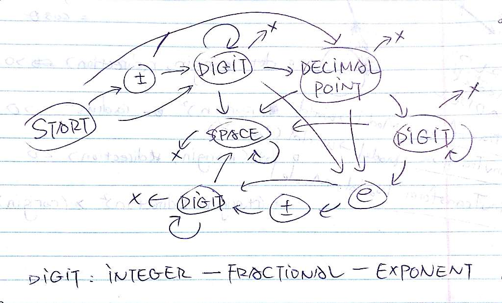

#344 Reverse String (Easy)
Scan first half and swap characters.
class Solution {
public:
string reverseString(string s) {
int length( s.length() );
char ch;
for( int i = 0; i < length >> 1; ++i ){
swap( s[ i ], s[ length - i - 1 ] );
}
return s;
}
};
Runtime: 12 ms
#126 Word Ladder II (Hard)
Build graph using BFS starting from endWord, for each node record its distance to endWord, then find all solutions using DFS from beginWord to endWord with decreasing distance.
struct Node {
Node(string word, int dist) {
this->word = word;
this->dist = dist;
}
int dist;
string word;
vector next;
};
class Solution {
public:
vector> findLadders(string beginWord, string endWord, unordered_set &wordList) {
if (beginWord.length() != endWord.length()) {
return vector>();
}
current.clear();
result.clear();
graph.clear();
id.clear();
for(; !q.empty(); q.pop());
wordList.insert(beginWord);
wordList.insert(endWord);
buildGraph(endWord, wordList);
if (id.find(beginWord) == id.end()) {
return result;
}
findPath(beginWord, endWord);
return result;
}
void buildGraph(string endWord, unordered_set &dict) {
q.push(make_pair(endWord, 0));
id[endWord] = graph.size();
graph.push_back(Node(endWord, 0));
while (!q.empty()) {
string word = q.front().first;
int dist = q.front().second;
int len = word.length();
for (int i = 0; i < len; ++i) {
// change one (ith) character
for (char ch = 'a'; ch <= 'z'; ++ch) {
string newWord = word;
newWord[i] = ch;
if (dict.find(newWord) == dict.end()) {
// not in dict
continue;
}
if (id.find(newWord) == id.end()) {
// new word
id[newWord] = graph.size();
graph.push_back(Node(newWord, dist + 1));
q.push(make_pair(newWord, dist + 1));
}
if (newWord != word) {
graph[id[word]].next.push_back(id[newWord]);
}
}
}
q.pop();
}
}
void findPath(string beginWord, string endWord) {
current.push_back(beginWord);
helper(id[beginWord], graph[id[beginWord]].dist);
}
void helper(int id, int dist) {
if (dist == 0) {
result.push_back(current);
return;
}
for (int i : graph[id].next) {
if (graph[i].dist >= dist) {
continue;
}
current.push_back(graph[i].word);
helper(i, dist - 1);
current.pop_back();
}
}
private:
vector graph;
unordered_map id;
queue> q;
vector> result;
vector current;
};
Runtime: 565 ms
#65 Valid Number (Hard)
Complex state machine.

class Solution {
public:
bool isNumber(string s) {
if (s.empty()) {
return false;
}
int length = (s += "#END#").length();
int ptr = 0;
enum state {
START, DECIMAL_SIGN, INTEGER_DIGIT, DECIMAL_POINT, FRACTIONAL_DIGIT,
E, EXPONENT_SIGN, EXPONENT_DIGIT, SPACE, TERMINATION, INVALID
} stateId;
bool isDecimalPointOnlyError = false;
while (ptr < length && s[ptr] == ' ') {
++ptr;
}
stateId = START;
while (ptr < length) {
char nxt = s[ptr];
if (stateId == START) {
if (nxt == '+' || nxt == '-') {
stateId = DECIMAL_SIGN;
} else if (nxt >= '0' && nxt <= '9') {
stateId = INTEGER_DIGIT;
} else if (nxt == '.') {
isDecimalPointOnlyError = true;
stateId = DECIMAL_POINT;
} else {
break;
}
} else if (stateId == DECIMAL_SIGN) {
if (nxt >= '0' && nxt <= '9') {
stateId = INTEGER_DIGIT;
}else if (nxt == '.') {
isDecimalPointOnlyError = true;
stateId = DECIMAL_POINT;
} else {
break;
}
} else if (stateId == INTEGER_DIGIT) {
if (nxt == ' ') {
stateId = SPACE;
} else if (nxt >= '0' && nxt <= '9') {
// state unchanged
} else if (nxt == '.') {
stateId = DECIMAL_POINT;
} else if (nxt == 'e' || nxt == 'E') {
stateId = E;
} else if (nxt == '#' && s.substr(ptr, 5) == "#END#") {
stateId = TERMINATION;
break;
} else {
break;
}
} else if (stateId == DECIMAL_POINT) {
if (nxt == ' ') {
stateId = SPACE;
} else if (nxt >= '0' && nxt <= '9') {
isDecimalPointOnlyError = false;
stateId = FRACTIONAL_DIGIT;
} else if (nxt == 'e' || nxt == 'E') {
stateId = E;
} else if (nxt == '#' && s.substr(ptr, 5) == "#END#") {
stateId = TERMINATION;
break;
} else {
break;
}
if (isDecimalPointOnlyError) {
break;
}
} else if (stateId == FRACTIONAL_DIGIT) {
if (nxt == 'e' || nxt == 'E') {
stateId = E;
} else if (nxt >= '0' && nxt <= '9') {
// state unchanged
} else if (nxt == ' ') {
stateId = SPACE;
} else if (nxt == '#' && s.substr(ptr, 5) == "#END#") {
stateId = TERMINATION;
break;
} else {
break;
}
} else if (stateId == E) {
if (nxt == '+' || nxt == '-') {
stateId = EXPONENT_SIGN;
} else if (nxt >= '0' && nxt <= '9') {
stateId = EXPONENT_DIGIT;
} else {
break;
}
} else if (stateId == EXPONENT_SIGN) {
if (nxt >= '0' && nxt <= '9') {
stateId = EXPONENT_DIGIT;
} else if (nxt == ' ') {
stateId = SPACE;
} else {
break;
}
} else if (stateId == EXPONENT_DIGIT) {
if (nxt >= '0' && nxt <= '9') {
// state unchanged
} else if (nxt == ' ') {
stateId = SPACE;
} else if (nxt == '#' && s.substr(ptr, 5) == "#END#") {
stateId = TERMINATION;
break;
} else {
break;
}
} else if (stateId == SPACE) {
if (nxt == ' ') {
// state unchanged
} else if (nxt == '#' && s.substr(ptr, 5) == "#END#") {
stateId = TERMINATION;
break;
} else {
break;
}
}
++ptr;
}
return stateId == TERMINATION && !isDecimalPointOnlyError;
}
};
Runtime: 6 ms
#343 Integer Break (Medium)
Dynamic Programming.
class Solution {
public:
int integerBreak(int n) {
vector f(n + 1, 0);
f[1] = 1;
for (int i = 2; i <= n; ++i) {
for (int j = 1; j <= (i >> 1); ++j) {
f[i] = max(f[i], j * (i - j));
f[i] = max(f[i], f[j] * (i - j));
f[i] = max(f[i], j * f[i - j]);
f[i] = max(f[i], f[j] * f[i - j]);
}
}
return f[n];
}
};
Runtime: 3 ms
#357 Count Numbers with Unique Digits (Medium)
Number of unique numbers using i digits can be computed based on number of unique numbers using i-1 digits.
class Solution {
public:
int countNumbersWithUniqueDigits(int n) {
if (n == 0) {
return 1;
} else if (n == 1) {
return 10;
} else if (n > 10) {
n = 10;
}
vector vi(11);
vi[1] = 9;
for (int i = 2; i <= n; ++i) {
vi[i] = vi[i - 1] * (11 - i);
}
vi[1] = 10;
for (int i = 2; i <= n; ++i) {
vi[i] += vi[i - 1];
}
return vi[n];
}
};
Runtime: 0 ms
#392 Is Subsequence (Medium)
Pointer i, j scan s, t respectively. If s[i] == t[j], move i, j forwards, else move j forwards only.
class Solution {
public:
bool isSubsequence(string s, string t) {
if (s.empty()) {
return true;
} else if (t.empty() || s.length() > t.length()) {
return false;
}
int lenS = s.length();
int lenT = t.length();
int i = 0;
for (int j = 0; i < lenS && j < lenT; ++i, ++j) {
while (j < lenT && s[i] != t[j]) {
++j;
}
}
return i == lenS;
}
};
Runtime: 72 ms
#339 Shuffle an Array (Medium)
Let all numbers be in the pool, each time randomly pick a number from the pool and append it to the result list.
class Solution {
public:
Solution(vector nums) {
this->nums = nums;
this->numsShuffled = nums;
}
/** Resets the array to its original configuration and return it. */
vector reset() {
return nums;
}
/** Returns a random shuffling of the array. */
vector shuffle() {
int n = nums.size();
for (int i = 0; i < n - 1; ++i) {
int j = rand() % (n - i);
swap(numsShuffled[i], numsShuffled[j + i]);
}
return numsShuffled;
}
private:
vector nums;
vector numsShuffled;
};
Runtime: 339 ms
#167 Two Sum II - Input array is sorted (Medium)
Pointer i, j scan from head to tail, tail to head respectively. If two sum is greater that target, move j backwards; else move i forwards.
class Solution {
public:
vector twoSum(vector& numbers, int target) {
int n = numbers.size();
if (n < 2) {
return vector{-1, -1};
}
int i = 0;
int j = n - 1;
while (i < j && numbers[i] + numbers[j] != target) {
if (numbers[i] + numbers[j] < target) {
++i;
} else {
--j;
}
}
return i < j ? vector{i + 1, j + 1} : vector{-1, -1};
}
};
Runtime: 6 ms
#406 Queue Reconstruction by Height (Medium)
Sort by h (taller first) and k (smaller first), then for each person, shift him ahead until satisfying requirement on k.
class Solution {
public:
vector> reconstructQueue(vector>& people) {
int n = people.size();
if (n == 0) {
return vector>();
}
sort(people.begin(), people.end(), comparePeople);
for (int i = 1; i < n; ++i) {
for (int j = i; people[j].second < j; --j) {
swap(people[j], people[j - 1]);
}
}
return people;
}
private:
static bool comparePeople(const pair &a, const pair &b) {
return (a.first == b.first) ? (a.second < b.second) : (a.first > b.first);
}
};
Runtime: 139 ms
#338 Counting Bits (Medium)
Number of 1 in i is:
1) number of 1 in i/2 if i is even,
2) number of 1 in i/2 plus 1 if i is odd.
class Solution {
public:
vector countBits(int num) {
vector result(num + 1);
result[0] = 0;
for (int i = 1; i <= num; ++i) {
result[i] = (i & 1) ? result[i >> 1] + 1: result[i >> 1];
}
return result;
}
};
Runtime: 103 ms
#292 Nim Game (Easy)
Determine if n can be exactly divided by 4. If yes, you lose, else you win.
class Solution {
public:
bool canWinNim(int n) {
return n & 3;
}
};
Runtime: 0 ms
#389 Find the Difference (Easy)
Simply count letters in s and t.
class Solution {
public:
char findTheDifference(string s, string t) {
int count[256];
memset(count, 0, sizeof count);
for (auto &ch : s) {
++count[(int)ch];
}
for (auto &ch : t) {
if (--count[(int)ch] == -1) {
return ch;
}
}
return 'A';
}
};
Runtime: 3 ms
#345 Reverse Vowels of a String (Easy)
Scan from both ends and swap vowels.
class Solution {
public:
string reverseVowels(string s) {
int length = s.length();
int i = 0;
int j = length - 1;
char tmp;
while( i < j ){
while( !isVowel( s[ i ] ) && i < j ) ++i;
while( !isVowel( s[ j ] ) && i < j ) --j;
if( i < j ){
tmp = s[ i ];
s[ i ] = s[ j ];
s[ j ] = tmp;
}
++i;
--j;
}
return s;
}
private:
bool isVowel( char ch ){
return ch == 'a' || ch == 'e' || ch == 'i' || ch == 'o' || ch == 'u'
|| ch == 'A' || ch == 'E' || ch == 'I' || ch == 'O' || ch == 'U';
}
};
Runtime: 16 ms
#350 Intersection of Two Arrays II (Easy)
Application of map.
class Solution {
public:
vector intersect(vector& nums1, vector& nums2) {
map< int, int > map1;
vector< int > intersection;
for( auto i : nums1 ){
auto ite = map1.find( i );
if( ite == map1.end() ){
map1[ i ] = 1;
}else{
++ite->second;
}
}
for( auto i : nums2 ){
auto ite = map1.find( i );
if( ite != map1.end() ){
intersection.push_back( i );
if( --ite->second == 0 ){
map1.erase( ite );
}
}
}
return intersection;
}
};
Runtime: 16 ms
#349 Intersection of Two Arrays (Easy)
Application of unordered_set.
class Solution {
public:
vector intersection(vector& nums1, vector& nums2) {
vector< int > intersection;
unordered_set< int > uset1, uset2;
for( auto i : nums1 ){
uset1.insert( i );
}
for( auto i : nums2 ){
if( uset1.find( i ) != uset1.end() ){
uset2.insert( i );
}
}
for( auto i : uset2 ){
intersection.push_back( i );
}
return intersection;
}
};
Runtime: 12 ms
#371 Sum of Two Integers (Easy)
Use AND to compute carry, lshift it by 1 bit and sum it to result of XOR till no carry.
class Solution {
public:
int getSum(int a, int b) {
int c;
while( b ){
c = ( a & b ) << 1;
a = a ^ b;
b = c;
}
return a;
}
};
Runtime: 0 ms
#258 Add Digits (Easy)
There are 10 possible results. If num is 0, print 0. Else if num can be exactly divided by 9, print 9. Else print the remainder.
class Solution {
public:
int addDigits(int num) {
return ( num - 1 ) % 9 + 1;
}
};
Runtime: 8 ms
#104 Maximum Depth of Binary Tree (Easy)
Recursively find maximum depth of subtrees of the current node, return the larger one incremented by 1.
class Solution {
public:
int maxDepth(TreeNode* root) {
return root? max( maxDepth( root->left ), maxDepth( root->right ) ) + 1 : 0;
}
};
Runtime: 8 ms
#237 Delete Node in a Linked List (Easy)
Instead of delete the given node, replace it by its next node and delete the next node.
class Solution {
public:
void deleteNode(ListNode* node) {
ListNode *nextNode( node->next );
ListNode *nextNextNode( nextNode->next );
node->val = nextNode->val;
node->next = nextNextNode;
delete nextNode;
}
};
Runtime: 20 ms
#283 Move Zeroes (Easy)
Suppose we already have a "sorted" sequence in the form [num,...,num,0,...,0] and here comes a:
I) zero: simply add it to the tail
II) non-zero: add it to the tail and swap it with the first zero in the original sequence
Run the algorithm above with original sequence empty.
class Solution {
public:
void moveZeroes(vector< int >& nums) {
int nNums( nums.size() );
int nZeros( 0 );
for( int i = 0; i < nNums; ++i ){
if( nums[ i ] == 0 ){
++nZeros;
}else if( nZeros > 0 && i - nZeros >= 0 ){
swap( nums[ i ], nums[ i - nZeros ] );
}
}
}
void swap( int &a, int &b ){
a ^= b ^= a ^= b;
}
};
Runtime: 20 ms
#100 Same Tree (Easy)
Compare current node, then subtrees recursively. Mind null pointer error.
class Solution {
public:
bool isSameTree(TreeNode* p, TreeNode* q) {
if( p == NULL && q == NULL ) return true;
if( p == NULL && q != NULL ) return false;
if( p != NULL && q == NULL ) return false;
if( p->val != q->val ) return false;
if( !isSameTree( p->left, q->left ) ) return false;
if( !isSameTree( p->right, q->right ) ) return false;
return true;
}
};
Runtime: 0 ms
#226 Invert Binary Tree (Easy)
Recursively swap left subtree and right subtree.
class Solution {
public:
TreeNode* invertTree(TreeNode* root) {
if( root == NULL ) return NULL;
TreeNode *tmp( root->left );
root->left = root->right;
root->right = tmp;
invertTree( root->left );
invertTree( root->right );
return root;
}
};
Runtime: 0 ms
#242 Valid Anagram (Easy)
Simply compare occurrence of letters in each word.
class Solution {
public:
bool isAnagram(string s, string t) {
if( s.length() != t.length() ) return false;
int len( s.length() );
int count[ 26 ];
memset( count, 0, sizeof count );
for( int i = 0; i < len; ++i ){
++count[ s[ i ] - ( int )'a' ];
--count[ t[ i ] - ( int )'a' ];
}
for( int i = 0; i < 26; ++i ){
if( count[ i ] ) return false;
}
return true;
}
};
Runtime: 12 ms
#217 Contains Duplicate (Easy)
Use std::unordered_set.
class Solution {
public:
bool containsDuplicate(vector< int >& nums) {
unordered_set< int > uset;
for( int num : nums ){
if( uset.find( num ) != uset.end() )
return true;
else
uset.insert( num );
}
return false;
}
};
Runtime: 48 ms
Runtime (using std::set): 104 ms
#171 Excel Sheet Column Number (Easy)
A new type of number with numerical base 26.
class Solution {
public:
int titleToNumber(string s) {
int len( s.length() );
int result( 0 );
for( int i = 0; i < len; ++i ){
if( i ) result *= 26;
result += s[ i ] - ( int )'A' + 1;
}
return result;
}
};
Runtime: 8 ms
#169 Majority Element (Easy)
Since we are given the condition "majority element always exists", its number of occurrence is greater than that of other numbers. Subtract the number of occurrence of the currently expected ME by number of occurrence of other numbers.
class Solution {
public:
int majorityElement(vector< int >& nums) {
int majorCount( 0 );
int majorNum( 0 );
for( int num : nums ){
if( majorCount == 0 ){
++majorCount;
majorNum = num;
}else if( majorNum == num ){
++majorCount;
}else{
--majorCount;
}
}
return majorNum;
}
};
Runtime: 20 ms
#235 Lowest Common Ancestor of a Binary Search Tree (Easy)
Since the given tree is a BST, value of LCA must be between values of p and q.
class Solution {
public:
TreeNode* lowestCommonAncestor(TreeNode* root, TreeNode* p, TreeNode* q) {
if( p->val > q->val ){
TreeNode *tmp( p );
p = q;
q = tmp;
}
if( root == p || root == q )
return root;
else if( root->val > p->val && root->val <= q->val )
return root;
else if( q->val < root->val )
return lowestCommonAncestor( root->left, p, q );
else
return lowestCommonAncestor( root->right, p, q );
}
};
Runtime: 44 ms
#191 Number of 1 Bits (Easy)
Simple counting.
class Solution {
public:
int hammingWeight(uint32_t n) {
n = ( n & 0x55555555U ) + ( n >> 1 & 0x55555555U );
n = ( n & 0x33333333U ) + ( n >> 2 & 0x33333333U );
n = ( n & 0x0f0f0f0fU ) + ( n >> 4 & 0x0f0f0f0fU );
n = ( n & 0x00ff00ffU ) + ( n >> 8 & 0x00ff00ffU );
n = ( n & 0x0000ffffU ) + ( n >> 16 & 0x0000ffffU );
return ( int )n;
}
};
Runtime: 4 ms
#13 Roman to Integer (Easy)
If a digit is less than its following digit, subtract it from result, else add it to result.
class Solution {
public:
int romanToInt(string s) {
static const int r2d[ 26 ]{
0, 0, 100, 500, 0, 0, 0, 0, 1, 0, 0, 50, 1000,
0, 0, 0, 0, 0, 0, 0, 0, 5, 0, 10, 0, 0,
};
int result( r2d[ s[ 0 ] - ( int )'A'] );
int pre( result ), cur( 0 );
int len( s.length() );
for( int i = 1; i < len; ++i ){
cur = r2d[ s[ i ] - ( int )'A' ];
if( cur > pre ) result -= pre << 1;
result += cur;
pre = cur;
}
return result;
}
};
Runtime: 36 ms
#206 Reverse Linked List (Easy)
Use a vector. OK I am cheating.
class Solution {
public:
ListNode* reverseList(ListNode* head) {
if( head == NULL ) return NULL;
vector< ListNode * > nodes;
for( ListNode *pNode = head; pNode != NULL; pNode = pNode->next ){
nodes.push_back( pNode );
}
for( int i = nodes.size() - 1; i > 0; --i ){
nodes[ i ]->next = nodes[ i - 1 ];
}
nodes[ 0 ]->next = NULL;
return nodes.back();
}
};
Runtime: 8 ms
#70 Climbing Stairs (Easy)
Number of ways to reach nth step can be added up by:
number of ways to reach (n-1)th step (climb 1 step from here) and
number of ways to reach (n-2)th step (climb 2 steps from here).
class Solution {
public:
int climbStairs(int n) {
vector< int > v( 2, 1 );
for( int i = 2; i <= n; ++i ){
v.push_back( v[ i - 1 ] + v[ i - 2 ] );
}
return v[ n ];
}
};
Runtime: 0 ms
#83 Remove Duplicates from Sorted List (Easy)
If next node has same value as current node, delete next node (and release memory).
class Solution {
public:
ListNode* deleteDuplicates(ListNode* head) {
for( ListNode *cur = head; cur != NULL; ){
ListNode *nxt( cur->next );
if( nxt == NULL ) break;
if( nxt->val == cur->val ){
cur->next = nxt->next;
delete nxt;
}else{
cur = nxt;
}
}
return head;
}
};
Runtime: 16 ms
#263 Ugly Number (Easy)
Divide the number by 2, 3, and 5 repeatedly. If 1 is left, the number is ugly.
class Solution {
public:
bool isUgly(int num) {
if( num <= 0 ) return false;
while( num % 2 == 0 ) num /= 2;
while( num % 3 == 0 ) num /= 3;
while( num % 5 == 0 ) num /= 5;
return num == 1;
}
};
Runtime: 4 ms
#202 Happy Number (Easy)
Use std::unordered_set to check if a cycle exists.
class Solution {
public:
bool isHappy(int n) {
if( n <= 0 ) return false;
unordered_set< int > uset;
while( n != 1 ){
if( uset.find( n ) != uset.end() )
return false;
else{
uset.insert( n );
n = nextN( n );
}
}
return true;
}
int nextN( int n ){
int result( 0 ), tmp;
while( n ){
tmp = n % 10;
n /= 10;
result += tmp * tmp;
}
return result;
}
};
Runtime: 4 ms
#21 Merge Two Sorted Lists (Easy)
Repeatedly take the larger head node of the lists.
class Solution {
public:
ListNode* mergeTwoLists(ListNode* l1, ListNode* l2) {
if( l1 == NULL )
return l2;
else if( l2 == NULL )
return l1;
ListNode head( 0 ), *tail( &head );
for( ; l1 != NULL && l2 != NULL; tail = tail->next ){
if( l1->val < l2->val ){
tail->next = l1;
l1 = l1->next;
}else{
tail->next = l2;
l2 = l2->next;
}
}
if( l1 == NULL )
tail->next = l2;
else
tail->next = l1;
return head.next;
}
};
Runtime: 12 ms
#232 Implement Queue using Stacks (Easy)
Take advantage of 2 stacks to get access to both head and tail.
class Queue {
public:
// Push element x to the back of queue.
void push(int x) {
while( !b.empty() ){ a.push( b.top() ); b.pop(); }
a.push( x );
}
// Removes the element from in front of queue.
void pop(void) {
while( !a.empty() ){ b.push( a.top() ); a.pop(); }
b.pop();
}
// Get the front element.
int peek(void) {
while( !a.empty() ){ b.push( a.top() ); a.pop(); }
return b.top();
}
// Return whether the queue is empty.
bool empty(void) {
return a.empty() && b.empty();
}
stack< int > a, b;
};
Runtime: 0 ms
#231 Power of 2 (Easy)
In binary representation, (n & -n) is the rightmost 1 of n. Use it to cancel the rightmost 1 of n (by XOR) and n will be 0 if it is a power of 2.
class Solution {
public:
bool isPowerOfTwo(int n) {
return n > 0 && ( n & -n ^ n ) == 0;
}
};
Runtime: 4 ms
#110 Balanced Binary Tree (Easy)
Recursively compare depths of subtrees.
class Solution {
public:
bool isBalanced(TreeNode* root) {
int depth( 0 );
return isBalancedAndGetDepth( root, depth );
}
bool isBalancedAndGetDepth( TreeNode *root, int &depth ){
if( root == NULL ) return true;
int lDepth( 0 ), rDepth( 0 );
if( !isBalancedAndGetDepth( root->left, lDepth ) ) return false;
if( !isBalancedAndGetDepth( root->right, rDepth ) ) return false;
if( lDepth - rDepth > 1 || lDepth - rDepth < -1 ) return false;
depth = lDepth > rDepth ? lDepth + 1 : rDepth + 1;
return true;
}
};
Runtime: 20 ms
#101 Symmetric Tree (Easy)
For a symmetric tree, its right subtree is a mirror of its left subtree.
For two mirrored trees A and B, A's right subtree is a mirror of B's left subtree, and A's left subtree is a mirror of B's right subtree.
class Solution {
public:
bool isSymmetric(TreeNode* root) {
return root == NULL || isMirror( root->left, root->right );
}
bool isMirror( TreeNode *left, TreeNode *right ){
if( left == NULL && right == NULL ) return true;
if( left != NULL && right == NULL ) return false;
if( left == NULL && right != NULL ) return false;
return left->val == right->val
&& isMirror( left->left, right->right )
&& isMirror( left->right, right->left );
}
};
Runtime: 4 ms
#27 Remove Element (Easy)
Just remove element.
class Solution {
public:
int removeElement(vector< int >& nums, int val) {
int len( nums.size() );
for( int i = 0; i < len; ++i ){
if( nums[ i ] != val ) continue;
while( i < len && nums[ len - 1 ] == val ) --len;
if( i < len ) nums[ i ] = nums[ --len ];
}
return len;
}
};
Runtime: 4 ms
#107 Binary Tree Level Order Traversal II (Easy)
Use std::queue to implement BFS and use std::stack to print result in expected order.
class Solution {
public:
vector< vector< int > > levelOrderBottom(TreeNode* root) {
if( root == NULL ) return vector< vector< int > >();
vector< vector< int > > result;
queue< pair< TreeNode *, int > > mqueue;
stack< pair< TreeNode *, int > > mstack;
mqueue.push( make_pair( root, 0 ) );
while( !mqueue.empty() ){
TreeNode *node( mqueue.front().first );
int layer( mqueue.front().second );
mstack.push( mqueue.front() );
if( node->right != NULL ) mqueue.push( make_pair( node->right, layer + 1 ) );
if( node->left != NULL ) mqueue.push( make_pair( node->left, layer + 1 ) );
mqueue.pop();
}
while( !mstack.empty() ){
vector< int > v;
int maxLayer( mstack.top().second );
while( !mstack.empty() && mstack.top().second == maxLayer ){
v.push_back( mstack.top().first->val );
mstack.pop();
}
result.push_back( v );
}
return result;
}
};
Runtime: 8 ms
#198 House Robber (Easy)
Dynamic Progromming
a[i] is the maximum value I can get from previous i houses without robbing the ith house,
b[i] is the maximum value I can get from previous i houses with robbing the ith house,
Then we have:
a[i+1] = max{ a[i], b[i] }, without robbing (i+1)th house,
b[i+1] = a[i] + {value of (i+1)th house}, with robbing (i+1)th house.
class Solution {
public:
int rob(vector< int >& nums) {
int nNums( nums.size() );
vector< int > a( nNums + 1, 0 ), b( nNums + 1, 0 );
for( int i = 0; i < nNums; ++i ){
a[ i + 1 ] = max( a[ i ], b[ i ] );
b[ i + 1 ] = a[ i ] + nums[ i ];
}
return max( a[ nNums ], b[ nNums ] );
}
};
Runtime: 0 ms
#26 Remove Duplicates from Sorted Array (Easy)
Iterate and remove duplicates.
class Solution {
public:
int removeDuplicates(vector< int >& nums) {
if( nums.empty() ) return 0;
int nNums( nums.size() ), result( 1 );
for( int i = 1; i < nNums; ++i ){
if( nums[ i ] != nums[ i - 1 ] ){
nums[ result++ ] = nums[ i ];
}
}
return result;
}
};
Runtime: 32 ms
#66 Plus One (Easy)
Simple iteration. Increment from least significant digit and break if no carry.
class Solution {
public:
vector< int > plusOne(vector< int >& digits) {
vector< int > result;
int nDigits( digits.size() );
bool carry( true );
for( int i = nDigits - 1; i >= 0; --i ){
if( ++digits[ i ] > 9 ){
digits[ i ] -= 10;
}else{
carry = false;
break;
}
}
if( carry ) result.push_back( 1 );
result.insert( result.end(), digits.begin(), digits.end() );
return result;
}
};
Runtime: 4 ms
#118 Pascal's Triangle (Easy)
a[i,1] = a[i,i] = 1
a[i,j] = a[i-1,j-1] + a[i-1,j].
class Solution {
public:
vector< vector< int > > generate(int numRows) {
if( numRows == 0 ) return vector< vector< int > >();
vector< vector< int > > result{{1}};
for( int i = 2; i <= numRows; ++i ){
vector< int > v{1};
for( int j = 1; j <= i - 2; ++j ){
v.push_back( result[ i - 2 ][ j - 1 ] + result[ i - 2 ][ j ] );
}
v.push_back( 1 );
result.push_back( v );
}
return result;
}
};
Runtime: 0 ms
#172 Factorial Trailing Zeroes (Easy)
Since trailing zeroes are produced by 2 and 5 (2*5=10) in n!'s factors and 5 appears less frequently, simply count number of occurrence of 5 in n!'s factors.
class Solution {
public:
int trailingZeroes(int n) {
int result( 0 );
long long N( n ), powerOf5( 5 );
while( N >= powerOf5 ){
result += ( int )( N / powerOf5 );
powerOf5 *= 5LL;
}
return result;
}
};
Runtime: 4 ms
#119 Pascal's Triangle II (Easy)
Reverse order of calculation so that next row can be produced in place.
class Solution {
public:
vector< int > getRow(int rowIndex) {
vector< int > result{ 1 };
for( int i = 1; i <= rowIndex; ++i ){
for( int j = i - 1; j > 0; --j ){
result[ j ] += result[ j - 1 ];
}
result.push_back( 1 );
}
return result;
}
};
Runtime: 0 ms
#102 Binary Tree Level Order Traversal (Easy)
Use a queue to implement BFS.
class Solution {
public:
vector< vector< int > > levelOrder(TreeNode* root) {
if( root == NULL ) return vector< vector< int > >();
vector< vector< int > > result;
vector< int > v;
queue< pair< TreeNode *, int > > mqueue;
int currentLevel( 0 );
mqueue.push( make_pair( root, 0 ) );
while( !mqueue.empty() ){
TreeNode *node( mqueue.front().first );
int nodeLevel( mqueue.front().second );
if( nodeLevel != currentLevel ){
result.push_back( v );
v.clear();
++currentLevel;
}
v.push_back( node->val );
if( node->left != NULL ){
mqueue.push( make_pair( node->left, currentLevel + 1 ) );
}
if( node->right != NULL ){
mqueue.push( make_pair( node->right, currentLevel + 1 ) );
}
mqueue.pop();
}
result.push_back( v );
return result;
}
};
Runtime: 8 ms
#112 Path Sum (Easy)
If there's a path from current node to leaf summed to {Sum}, there's a path from its child node to leaf Summed to {Sum - value of current node}.
class Solution {
public:
bool hasPathSum(TreeNode* root, int sum) {
if( root == NULL ) return false;
if( root->left == NULL && root->right == NULL ){
return root->val == sum;
}else{
sum -= root->val;
if( root->left != NULL && hasPathSum( root->left, sum ) ) return true;
if( root->right != NULL && hasPathSum( root->right, sum ) ) return true;
return false;
}
}
};
Runtime: 12 ms
#225 Implement Stack using Queues (Easy)
Take advantage of 2 queues to get access to both head and tail.
class Stack {
public:
// Push element x onto stack.
void push(int x) {
b.push( x );
}
// Removes the element on top of the stack.
void pop() {
if( !b.empty() ){
while( b.size() > 1 ){ a.push( b.front() ); b.pop(); }
b.pop();
}else{
while( !a.empty() ){ b.push( a.front() ); a.pop(); }
pop();
}
}
// Get the top element.
int top() {
if( !b.empty() ){
while( b.size() > 1 ){ a.push( b.front() ); b.pop(); }
return b.front();
}else{
while( !a.empty() ){ b.push( a.front() ); a.pop(); }
return top();
}
}
// Return whether the stack is empty.
bool empty() {
return a.empty() && b.empty();
}
queue< int > a, b;
};
Runtime: 0 ms
#9 Panlindrome Number (Easy)
(Discussion) Reverse till half and compare.
class Solution {
public:
bool isPalindrome(int x) {
if( x < 0 || x != 0 && x % 10 == 0 ) return false;
int y( 0 );
while( x >= y ){
if( x == y || x / 10 == y ) return true;
y = y * 10 + x % 10;
x /= 10;
}
return false;
}
};
Runtime: 80 ms
#111 Minimum Depth of Binary Tree (Easy)
Recursively find min depth. Trim branches deeper than current min depth.
class Solution {
public:
int minDepth(TreeNode* root) {
if( root == NULL ) return 0;
result = 0x7fffffff;
traverse( root, 1 );
return result;
}
void traverse( TreeNode *root, int depth ){
if( root->left == NULL && root->right == NULL )
result = depth;
else if( result <= depth )
return;
else{
if( root->left != NULL ) traverse( root->left, depth + 1 );
if( root->right != NULL ) traverse( root->right, depth + 1 );
}
}
int result;
};
Runtime: 12 ms
#160 Intersection of Two Linked Lists (Easy)
Calculate difference of length of the given lists D.
Two pointers walk on the lists, with the pointer on longer list walked D steps in advance.
The intersection is where they meet.
class Solution {
public:
ListNode *getIntersectionNode(ListNode *headA, ListNode *headB) {
ListNode *ptrA( headA ), *ptrB( headB );
ListNode *tailA( NULL ), *tailB( NULL );
int lenA( 0 ), lenB( 0 );
for( ; ptrA != NULL; ptrA = ptrA->next ){
if( ptrA->next == NULL ) tailA = ptrA;
++lenA;
}
for( ; ptrB != NULL; ptrB = ptrB->next ){
if( ptrB->next == NULL ) tailB = ptrB;
++lenB;
}
if( tailA != tailB ) return NULL;
if( lenA < lenB ){
auto tmp1( lenA ); lenA = lenB; lenB = tmp1;
auto tmp2( headA ); headA = headB; headB = tmp2;
}
ptrA = headA;
ptrB = headB;
for( int i = lenA - lenB; i > 0; ptrA = ptrA->next, --i );
for( ; ptrA != ptrB; ptrA = ptrA->next, ptrB = ptrB->next );
return ptrA;
}
};
Runtime: 52 ms
(Discussion) Smart solution!
class Solution {
public:
ListNode *getIntersectionNode(ListNode *headA, ListNode *headB) {
ListNode *ptrA = headA, *ptrB = headB;
while (ptrA != ptrB) {
ptrA = ptrA ? ptrA->next : headB;
ptrB = ptrB ? ptrB->next : headA;
}
return ptrA;
}
};
#88 Merge Sorted Array (Easy)
Merge from tail, so that no extra memory is needed.
class Solution {
public:
void merge(vector< int >& nums1, int m, vector< int >& nums2, int n) {
if( m == 0 ){ nums1 = nums2; return; }
if( n == 0 ) return;
nums1.resize( m + n );
for( int i = m - 1, j = n - 1, k = m + n - 1; k >= 0; --k ){
if( i < 0 ){ nums1[ k ] = nums2[ j-- ]; continue; }
if( j < 0 ){ nums1[ k ] = nums1[ i-- ]; continue; }
nums1[ k ] = nums1[ i ] > nums2[ j ] ? nums1[ i-- ] : nums2[ j-- ];
}
}
};
Runtime: 4 ms
#190 Reverse Bits (Easy)
Simple bits manipulation.
class Solution {
public:
uint32_t reverseBits(uint32_t n) {
n = ( n << 1 & 0xAAAAAAAAU ) | ( n >> 1 & 0x55555555U );
n = ( n << 2 & 0xCCCCCCCCU ) | ( n >> 2 & 0x33333333U );
n = ( n << 4 & 0xF0F0F0F0U ) | ( n >> 4 & 0x0F0F0F0FU );
n = ( n << 8 & 0xFF00FF00U ) | ( n >> 8 & 0x00FF00FFU );
n = ( n << 16 & 0xFFFF0000U ) | ( n >> 16 & 0x0000FFFFU );
return n;
}
};
Runtime: 4 ms
#36 Valid Sudoku (Easy)
Simple counting.
class Solution {
public:
bool isValidSudoku(vector< vector>& board) {
vector< bool > flag;
char tmp;
for( int i = 0, jj, kk; i < 9; ++i ){
flag.assign( 10, false );
for( int j = 0; j < 9; ++j ){
if( ( tmp = board[ i ][ j ] ) == '.' ) continue;
if( flag[ tmp - '0' ] ) return false;
flag[ tmp - '0' ] = true;
}
flag.assign( 10, false );
for( int j = 0; j < 9; ++j ){
if( ( tmp = board[ j ][ i ] ) == '.' ) continue;
if( flag[ tmp - '0' ] ) return false;
flag[ tmp - '0' ] = true;
}
jj = i / 3 * 3; kk = i % 3 * 3;
flag.assign( 10, false );
for( int j = 0; j < 3; ++j ){
for( int k = 0; k < 3; ++k ){
if( ( tmp = board[ jj + j ][ kk + k ] ) == '.' ) continue;
if( flag[ tmp - '0' ] ) return false;
flag[ tmp - '0' ] = true;
}
}
}
return true;
}
};
Runtime: 16 ms
#223 Rectangle Area (Easy)
Use long long to avoid int overflow.
class Solution {
public:
int computeArea(int A, int B, int C, int D, int E, int F, int G, int H) {
long long a( ( 0LL + C - A ) * ( 0LL + D - B ) );
long long b( ( 0LL + G - E ) * ( 0LL + H - F ) );
long long c( 0LL + min( C, G ) - max( A, E ) );
long long d( 0LL + min( D, H ) - max( B, F ) );
long long e( c > 0LL && d > 0LL ? c * d : 0LL );
return ( int )( a + b - e );
}
};
Runtime: 32 ms
#219 Contains Duplicate II (Easy)
Use std::unordered_set.
class Solution {
public:
bool containsNearbyDuplicate(vector< int >& nums, int k) {
if( k <= 0 ) return false;
unordered_set< int > uset;
int nNums( nums.size() );
for( int i = 0; i < nNums; ++i ){
if( uset.find( nums[ i ] ) != uset.end() ) return true;
if( i - k >= 0 ) uset.erase( nums[ i - k ] );
uset.insert( nums[ i ] );
}
return false;
}
};
Runtime: 32 ms
#58 Length of Last Word (Easy)
Simple counting.
class Solution {
public:
int lengthOfLastWord(string s) {
int len( s.length() );
int result( 0 );
while( len > 0 && s[ len - 1 ] == ' ' ) --len;
while( len > 0 && s[ len - 1 ] != ' ' ) --len, ++result;
return result;
}
};
Runtime: 4 ms
#19 Remove Nth Node From End of List (Easy)
2 pointers walk along the list with fast one ahead of slow one by N steps. Delete slow one when fast one meets the end.
class Solution {
public:
ListNode* removeNthFromEnd(ListNode* head, int &n) {
ListNode *fast( head ), *slow( head );
for( int i = 0; i < n; ++i, fast = fast->next );
if( !fast ){
auto tmp( head );
head = head->next;
delete tmp;
return head;
}else{
fast = fast->next;
while( fast ){ slow = slow->next; fast = fast->next; }
auto nxt( slow->next ); slow->next = nxt->next; delete nxt;
}
return head;
}
};
Runtime: 4 ms
#20 Valid Parentheses (Easy)
Use a stack. When it comes a left bracket, push into stack, or it comes a right bracket, check if it makes a pair with the top element in stack.
class Solution {
public:
bool isValid(string s) {
stack< int > mstack;
unordered_map< char, int > umap{
{ '(', 0 }, { ')', 1 },
{ '{', 2 }, { '}', 3 },
{ '[', 4 }, { ']', 5 },
};
for( char ch : s ){
int code( umap[ ch ] );
if( code & 1 ){
if( mstack.empty() ) return false;
if( mstack.top() != code - 1 ) return false;
mstack.pop();
}else
mstack.push( code );
}
return mstack.empty();
}
};
Runtime: 0 ms
#205 Isomorphic Strings (Easy)
Check 1-to-1 mapping.
class Solution {
public:
bool isIsomorphic(string s, string t) {
char chmap[ 256 ]{ 0 };
bool used[ 256 ]{ false };
int len( s.length() );
for( int i = 0; i < len; ++i ){
if( chmap[ s[ i ] ] ){
if( chmap[ s[ i ] ] != t[ i ] ) return false;
}else{
if( used[ t[ i ] ] ) return false;
chmap[ s[ i ] ] = t[ i ];
used[ t[ i ] ] = true;
}
}
return true;
}
};
Runtime: 36 ms
(Discussion) Smarter solution.
class Solution {
public:
bool isIsomorphic(string s, string t) {
char stmap[ 512 ]{ 0 };
int len( s.length() );
for( int i = 0; i < len; ++i ){
if( stmap[ s[ i ] ] != stmap[ t[ i ] + 256 ] return false;
stmap[ s[ i ] ] = stmap[ t[ i ] + 256 ] = i + 1;
}
return true;
}
};
Runtime: 8 ms
#290 Word Pattern (Easy)
1-to-1 map, similar idea as #205.
(Discussion) Use istringstream to read words from str.
class Solution {
public:
bool wordPattern(string pattern, string str) {
unordered_map< char, int > pmap;
unordered_map< string, int > smap;
int head( 0 ), tail( 0 ), len( pattern.length() ), i;
string word;
for( i = 0; i < len && tail != -1; ++i ){
tail = str.find( " ", head );
word = str.substr( head, tail - head );
head = tail + 1;
auto ite1( pmap.find( pattern[ i ] ) );
auto ite2( smap.find( word ) );
if( ( ite1 == pmap.end() ) != ( ite2 == smap.end() ) )
return false;
if( ( ite1 != pmap.end() ) && ( ite2 != smap.end() )
&& ( ite1->second != ite2->second ) ) return false;
pmap[ pattern[ i ] ] = smap[ word ] = i;
}
return i == len && tail == -1;
}
};
Runtime: 0 ms
#203 Remove Linked List Elements (Easy)
Use a dummy head node to simplify situation.
class Solution {
public:
ListNode* removeElements(ListNode* head, int val) {
ListNode result( 0 ); result.next = head;
for( auto ptr = &result; ptr->next; ){
if( ptr->next->val == val ){
auto tmp( ptr->next->next );
delete ptr->next;
ptr->next = tmp;
}else
ptr = ptr->next;
}
return result.next;
}
};
Runtime: 32 ms
#38 Count and Say (Easy)
Use std::stringstream to simplify string manipulation.
class Solution {
public:
string countAndSay(int n) {
if( n <= 1 ) return string( "1" );
stringstream ss;
string s( "1" );
while( --n ){
char pre( '\0' );
int preCount( 0 );
for( char cur : s ){
if( cur != pre ){
if( preCount ) ss << preCount << pre;
pre = cur;
preCount = 1;
}else
++preCount;
}
if( preCount ) ss << preCount << pre;
ss >> s; ss.clear(); ss.str( "" );
}
return s;
}
};
Runtime: 4 ms
#299 Bulls and Cows (Easy)
Simple counting. Use std::stringstream or std::to_string.
class Solution {
public:
string getHint(string secret, string guess) {
stringstream ss;
int nBulls( 0 ), nCows( 0 );
int count[ 20 ]{ 0 };
int len( secret.length() );
for( int i = 0; i < len; ++i ){
nBulls += secret[ i ] == guess[ i ] ? 1 : 0;
++count[ secret[ i ] - '0' ];
++count[ guess[ i ] - '0' + 10 ];
}
for( int i = 0; i < 10; ++i ){
nCows += min( count[ i ], count[ i + 10 ] );
}
ss << nBulls << "A" << nCows - nBulls << "B";
return ss.str();
}
};
Runtime: 4 ms
#14 Longest Common Prefix (Easy)
Simple counting.
class Solution {
public:
string longestCommonPrefix(vector& strs) {
if( strs.empty() ) return string( "" );
int nStrs( strs.size() );
int maxLen( strs[ 0 ].length() );
for( int i = 1; i < nStrs; ++i ){
int len( strs[ i ].length() ), j;
for( j = 0; j < len && j < maxLen; ++j )
if( strs[ 0 ][ j ] != strs[ i ][ j ] ) break;
maxLen = j;
}
return strs[ 0 ].substr( 0, maxLen );
}
};
Runtime: 4 ms
#67 Add Binary (Easy)
Split digits into vector and add.
class Solution {
public:
string addBinary(string a, string b) {
vector< int > va, vb;
string result;
split( a, va );
split( b, vb );
int lenA( va.size() );
int lenB( vb.size() );
if( lenA < lenB ){
va.swap( vb );
lenA = lenB;
}
vb.resize( lenA );
va.push_back( 0 );
for( int i = 0; i < lenA; ++i ){
va[ i + 1 ] += va[ i ] + vb[ i ] >> 1;
result = ( va[ i ] + vb[ i ] & 1 ? '1' : '0' ) + result;
}
return va.back() ? '1' + result : result;
}
void split( const string &s, vector< int > &v ){
for( int i = s.length() - 1; i >= 0; --i ){
v.push_back( s[ i ] - '0' );
}
}
};
Runtime: 8 ms
(Discussion) More concise code!class Solution {
public:
string addBinary(string a, string b) {
int i( a.length() - 1 );
int j( b.length() - 1 );
int carry( 0 );
string result;
while( i >= 0 || j >= 0 || carry ){
carry += i >= 0 && a[ i-- ] - '0' ? 1 : 0;
carry += j >= 0 && b[ j-- ] - '0' ? 1 : 0;
result = ( carry & 1 ? '1' : '0' ) + result;
carry >>= 1;
}
return result;
}
};
Runtime: 4 ms
#234 Palindrome Linked List (Easy)
Reverse first half and compare.
class Solution {
public:
bool isPalindrome(ListNode* head) {
if( head == NULL || head->next == NULL ) return true;
ListNode dummy( 0 ); dummy.next = head;
ListNode *fast( &dummy ), *slow( &dummy );
ListNode *l, *r;
while( fast->next && fast->next->next ){
slow = slow->next;
fast = fast->next->next;
}
l = slow; r = slow->next;
if( fast->next ) r = r->next;
l->next = NULL;
for( auto p = &dummy, c = head, n = c->next; ; ){
c->next = p;
if( !n ){ head->next = NULL; break; }
p = c; c = n; n = n->next;
}
for( ; l && l->val == r->val; l = l->next, r = r->next );
return l == NULL;
}
};
Runtime: 28 ms
#257 Binary Tree Paths (Easy)
Simple DFS. Use a vector to record nodes on current path.
class Solution {
public:
vector binaryTreePaths(TreeNode* root) {
if( root == NULL )
return vector< string >();
else{
traverse( root );
return vs;
}
}
void traverse( TreeNode *root ){
vi.push_back( root->val );
if( root->left == NULL && root->right == NULL ){
string s;
for( int i : vi ) s += "->" + to_string( i );
vs.push_back( s.substr( 2, -1 ) );
}else{
if( root->left ) traverse( root->left );
if( root->right ) traverse( root->right );
}
vi.pop_back();
}
vector< string > vs;
vector< int > vi;
};
Runtime: 8 ms
#303 Range Sum Query - Immutable (Easy)
Precompute suffix sum array, then sumRange( i, j ) = suffixSum( j ) - suffixSum( i - 1 ).
class NumArray {
public:
NumArray(vector< int > &nums) {
for( int i = 0; i < nums.size(); ++i )
v.push_back( v[ i ] + nums[ i ] );
}
int sumRange(int i, int j) {
return v[ j + 1 ] - v[ i ];
}
vector< int > v{ 0 };
};
Runtime: 596 ms
#28 Implement strStr() (Easy)
Compare by brute force.
class Solution {
public:
int strStr(string haystack, string needle) {
int lenH( haystack.length() );
int lenN( needle.length() );
if( lenN == 0 ) return 0;
if( lenH < lenN ) return -1;
for( int i = 0; i < lenH - lenN + 1; ++i ){
for( int j = 0; ; ++j ){
if( haystack[ i + j ] != needle[ j ] ) break;
if( j == lenN - 1 ) return i;
}
}
return -1;
}
};
Runtime: 4 ms
#7 Reverse Integer (Easy)
Mind tricky inputs like INT_MAX, INT_MIN.
class Solution {
public:
int reverse(int x) {
if( x == 1 << 31 ) return 0;
if( x < 0 ) return -reverse( -x );
long long y( 0LL );
while( x ){
y = y * 10LL + x % 10;
x /= 10;
}
return y <= 0x7fffffffLL ? ( int )y : 0;
}
};
Runtime: 8 ms
#125 Valid Palindrome (Easy)
Extract alphanumerics and check palindrome.
class Solution {
public:
bool isPalindrome(string s) {
string t;
int len( 0 );
for( char ch : s ){
if( ch >= '0' && ch <= '9'
|| ch >= 'a' && ch <= 'z'
|| ch >= 'A' && ch <= 'Z' ){
t += ch > 'Z' ? ( char )( ch - 32 ) : ch;
++len;
}
}
for( int i = 0; i < len >> 1; ++i ){
if( t[ i ] != t[ len - i - 1 ] ) return false;
}
return true;
}
};
Runtime: 16 ms
#6 ZigZag Conversion (Easy)
Simple simulation.
class Solution {
public:
string convert(string s, int numRows) {
if( s.empty() || numRows < 2 ) return s;
vector< string > vs( numRows, "" );
int len( s.length() ), loop( numRows - 1 << 1 );
string result;
for( int i = 0, j = 0; i < len; ++i ){
j = i % loop;
if( j >= numRows ) j = ( numRows - 1 << 1 ) - j;
vs[ j ] += s[ i ];
}
for( string str : vs ) result += str;
return result;
}
};
Runtime: 48 ms
#Count Primes (Easy)
"Sift" non-primes out using known primes. Mind int range overflow.
class Solution {
public:
int countPrimes(int n) {
if( n < 2 ) return 0;
vector< bool > prime( n, true );
int result( 0 );
for( int i = 2; i < n; ++i ){
if( !prime[ i ] ) continue;
++result;
if( i > 46340 ) continue;
for( int j = i * i; j < n; j += i ){
prime[ j ] = false;
}
}
return result;
}
};
Runtime: 312 ms
#228 Summary Ranges (Easy)
Simple iteration. Append an end symbol to simplify situation.
class Solution {
public:
vector summaryRanges(vector< int >& nums) {
if( nums.empty() ) return vector< string >();
vector< string > result;
int nNums( nums.size() );
int head( 0 ), tail( 0 );
nums.push_back( nums[ nNums++ - 1 ] );
for( int i = 1; i < nNums; tail = i++ ){
if( nums[ i ] != nums[ i - 1 ] + 1 ){
if( tail - head )
result.push_back( to_string( nums[ head ] )
+ "->" + to_string( nums[ tail ] ) );
else
result.push_back( to_string( nums[ head ] ) );
head = i;
}
}
return result;
}
};
Runtime: 4 ms
#278 First Bad Version (Easy)
Binary search. Mind int range overflow when computing middle.
bool isBadVersion(int version);
class Solution {
public:
int firstBadVersion(int n) {
int lower( 1 ), upper( n ), middle;
while( upper - lower ){
middle = lower + ( upper - lower >> 1 );
if( isBadVersion( middle ) )
upper = middle;
else
lower = middle + 1;
}
return isBadVersion( upper ) ? upper : 0;
}
};
Runtime: 0 ms
#155 Min Stack (Easy)
Use 2 stacks. One for normal use, the other to store mins.
class MinStack {
public:
void push(int x) {
if( b.empty() || x <= b.top() ) b.push( x );
a.push( x );
}
void pop() {
if( b.top() == a.top() ) b.pop();
a.pop();
}
int top() {
return a.top();
}
int getMin() {
return b.top();
}
stack< int > a, b;
};
Runtime: 28 ms
#168 Excel Sheet Column Title (Easy)
A new type of number with a numeral base of 26.
class Solution {
public:
string convertToTitle(int n) {
string result;
do{
result = ( char )( --n % 26 + 'A' ) + result;
}while( n /= 26 );
return result;
}
};
Runtime: 0 ms
#189 Rotate Array (Easy)
Reverse first part, reverse second part, then reverse whole.
Note that k might be greater than size of nums.
class Solution {
public:
void rotate(vector< int >& nums, int k) {
if( nums.empty() || ( k %= nums.size() ) < 1 ) return;
reverse( nums, 0, nums.size() - k - 1 );
reverse( nums, nums.size() - k, nums.size() - 1 );
reverse( nums, 0, nums.size() - 1 );
}
void reverse( vector< int > &nums, int a, int b ){
for( int i = 0; i < b - a + 1 >> 1; ++i ){
auto tmp( nums[ a + i ] );
nums[ a + i ] = nums[ b - i ];
nums[ b - i ] = tmp;
}
}
};
Runtime: 4 ms
#165 Compare Version Numbers(Easy)
Use std::istringstream to ease string manipulation.
class Solution {
public:
int compareVersion(string version1, string version2) {
for( char &ch : version1 ) ch == '.' ? ch = ' ' : 0;
for( char &ch : version2 ) ch == '.' ? ch = ' ' : 0;
int a( 0 ), b( 0 );
bool getA, getB;
istringstream iss1( version1 );
istringstream iss2( version2 );
while( true ){
a = b = 0;
getA = iss1 >> a ? true : false;
getB = iss2 >> b ? true : false;
if( !getA && !getB ) return 0;
if( a != b ) return a > b ? 1 : -1;
}
}
};
Runtime: 0 ms
#8 String to Integer (Easy)
Simple state machine.
class Solution {
public:
int myAtoi(string str) {
bool positive( true );
bool starting( true );
long long result( 0 );
for( char ch : str ){
if( starting ){
if( ch == ' ' || ch == '\t' ) continue;
if( ch == '+' || ch == '-' || ch >= '0' && ch <= '9' ){
if( ch == '-' ) positive = false;
else if( ch != '+' ) result = ch - '0';
starting = false;
continue;
}
return 0;
}else{
if( ch < '0' || ch > '9' ) break;
result = result * 10 + ( ch - '0' );
if( positive && result > 0x7fffffffLL ) return 0x7fffffff;
if( !positive && result > 0x80000000LL ) return 0x80000000;
}
}
return positive ? ( int )result : ( int )( -result );
}
};
Runtime: 8 ms
#136 Single Number (Medium)
Idea similar to qsort. Choose a standard and make left part less than or equal to standard and right part greater than standard. The answer is in the part with odd number of elements.
class Solution {
public:
int singleNumber(vector< int >& nums) {
if( nums.empty() ) return 0;
return find( nums, 0, nums.size() - 1 );
}
int find( vector< int > &nums, int l, int r ){
if( r == l ) return nums[ l ];
int i( l ), j( r );
int m( nums[ l + rand() % ( r - l + 1 ) ] );
while( i < j ){
while( nums[ i ] <= m ) ++i;
while( nums[ j ] > m ) --j;
if( i < j ){
auto tmp( nums[ i ] );
nums[ i ] = nums[ j ];
nums[ j ] = tmp;
}
}
if( i <= r && ( r - i + 1 & 1 ) )
return find( nums, i, r );
else
return find( nums, l, j );
}
};
Runtime: 0 ms
(Discussion) XOR! Genius!
class Solution {
public:
int singleNumber(vector< int >& nums) {
int result( 0 );
for( int i : nums ) result ^= i;
return result;
}
};
#260 Single Number III (Medium)
XOR all numbers. Use a bit set of the result to classify all numbers into two parts. The answer is the XOR of each part.
class Solution {
public:
vector< int > singleNumber(vector< int >& nums) {
int all( 0 ), first( 0 ), second( 0 );
for( int i : nums ) all ^= i; all &= -all;
for( int i : nums ) i & all ? first ^= i : second ^= i;
return vector< int >{ first, second };
}
};
Runtime: 0 ms
#122 Best Time to Buy and Sell Stock II (Medium)
If price today is higher than yesterday, "bought" yesterday and sell today.
class Solution {
public:
int maxProfit(vector< int >& prices) {
int result( 0 ), yesterday( 0x7fffffff );
for( int today : prices ){
result += today > yesterday ? today - yesterday : 0;
yesterday = today;
}
return result;
}
};
Runtime: 12 ms
#238 Product of Array Except Self (Medium)
Use output to store prefix product and nums to store suffix product, then combine them together.
class Solution {
public:
vector< int > productExceptSelf(vector< int >& nums) {
vector< int > output( nums.size(), 1 );
for( int i = 1; i < nums.size(); ++i ){
output[ i ] = output[ i - 1] * nums[ i - 1 ];
}
for( int i = nums.size() - 2; i >= 0; --i ){
nums[ i ] *= nums[ i + 1 ];
output[ i ] *= nums[ i + 1 ];
}
return output;
}
};
Runtime: 60 ms
#144 Binary Tree Preorder Traversal (Medium)
Use stack to solve it iteratively.
class Solution {
public:
vector< int > preorderTraversal(TreeNode* root) {
if( root == NULL ) return vector< int >();
vector< int > result;
stack< TreeNode * > mstack;
TreeNode *pNode;
mstack.push( root );
while( !mstack.empty() ){
pNode = mstack.top();
mstack.pop();
result.push_back( pNode->val );
if( pNode->right ) mstack.push( pNode->right );
if( pNode->left ) mstack.push( pNode->left );
}
return result;
}
};
Runtime: 0 ms
#319 Bulb Switcher (Medium)
Lights at positions of perfect square will be on.
class Solution {
public:
int bulbSwitch(int n) {
return ( int )sqrt( n + 0. );
}
};
Runtime: 0 ms
#94 Binary Tree Inorder Traversal (Medium)
Use stack to solve it iteratively. Add a flag to indicate inorder.
class Solution {
public:
vector< int > inorderTraversal(TreeNode* root) {
if( root == NULL ) return vector< int >();
vector< int > result;
stack< pair< TreeNode *, bool > > mstack;
bool inorder;
mstack.push( make_pair( root, false ) );
while( !mstack.empty() ){
root = mstack.top().first;
inorder = mstack.top().second;
mstack.pop();
if( inorder ){ result.push_back( root->val ); continue; }
if( root->right ) mstack.push( make_pair( root->right, false ) );
mstack.push( make_pair( root, true ) );
if( root->left ) mstack.push( make_pair( root->left, false ) );
}
return result;
}
};
Runtime: 0 ms
#268 Missing Number (Medium)
All Hail XOR!!
class Solution {
public:
int missingNumber(vector< int >& nums) {
int result( 0 );
for( int i = 0; i <= nums.size(); ++i ) result ^= i;
for( int i : nums ) result ^= i;
return result;
}
};
Runtime: 36 ms
#318 Maximum Product of Word Lengths (Medium)
Use bitset to indicate letter usage. Compare by brute force.
class Solution {
public:
int maxProduct(vector& words) {
int hash( 0 ), result( 0 );
int nWords( words.size() );
vector< pair< int, int > > vp;
for( const string &str : words ){
hash = 0;
for( const char &ch : str ) hash |= 1 << ch - 'a';
vp.push_back( make_pair( hash, str.length() ) );
}
for( int i = 0; i < nWords - 1; ++i ){
for( int j = i + 1; j < nWords; ++j ){
if( vp[ i ].first & vp[ j ].first != 0 ) continue;
result = max( result, vp[ i ].second * vp[ j ].second );
}
}
return result;
}
};
Runtime: 148 ms
# (Medium)
Fast pointer walks twice as fast as slow pointer. There is a loop if fast one meets slow one before it meets end.
class Solution {
public:
bool hasCycle(ListNode *head) {
if( head == NULL ) return false;
ListNode *slow( head ), *fast( head->next );
while( fast && slow != fast ){
slow = slow->next;
fast = fast->next;
if( fast == NULL ) return false;
fast = fast->next;
}
return fast != NULL;
}
};
Runtime: 12 ms
#137 Single Number II (Medium)
Can be solved similarly to #136.
(Discussion)Crazy XOR!!
class Solution {
public:
int singleNumber(vector< int >& nums) {
int ones( 0 ), twos( 0 );
for( int x : nums ){
ones ^= x & ~twos;
twos ^= x & ~ones;
}
return ones;
}
};
Runtime: 12 ms
#116 Populating Next Right Pointers in Each Node (Medium)
Next of a left child is its parent's right child. Next of a right child is its parent's next node's left child. So we should populate the tree from right to left.
class Solution {
public:
void connect(TreeLinkNode *root) {
traverse( root, NULL, RIGHT );
}
void traverse( TreeLinkNode *root, TreeLinkNode *parent, int flag ){
if( root == NULL ) return;
if( parent != NULL ){
if( flag == LEFT ){
root->next = parent->right;
}else if( parent->next != NULL ){
root->next = parent->next->left;
}else{
root->next = NULL;
}
}else{
root->next = NULL;
}
traverse( root->right, root, RIGHT );
traverse( root->left, root, LEFT );
}
static const int LEFT = 0;
static const int RIGHT = 1;
};
Runtime: 24 ms
#108 Convert Sorted Array to Binary Search Tree (Medium)
Recursively build tree using first half for left subtree and the other half for right subtree.
class Solution {
public:
TreeNode* sortedArrayToBST(vector< int >& nums) {
return buildTree( nums, 0, nums.size() - 1 );
}
TreeNode* buildTree( vector< int > &nums, int l, int r ){
if( l > r ) return NULL;
int m( r + l + 1 >> 1 );
TreeNode *root = new TreeNode( nums[ m ] );
root->left = buildTree( nums, l, m - 1 );
root->right = buildTree( nums, m + 1, r );
return root;
}
};
Runtime: 16 ms
#53 Maximum Subarray (Medium)
Greedy strategy. Add current number to sum. Set sum to zero if it is less than zero.
class Solution {
public:
int maxSubArray(vector< int >& nums) {
int result( 1 << 31 ), sum( 0 );
for( int i : nums ){
sum += i;
result = max( result, sum );
sum < 0 ? sum = 0 : 0;
}
return result;
}
};
Runtime: 12 ms
#153 Find Minimum in Rotated Sorted Array (Medium)
Binary search.
class Solution {
public:
int findMin(vector< int >& nums) {
int lower( 0 ), upper( nums.size() - 1 ), middle;
while( upper - lower ){
middle = lower + ( upper - lower >> 1 );
if( nums[ middle ] <= nums[ upper ] )
upper = middle;
else
lower = middle + 1;
}
return nums[ upper ];
}
};
Runtime: 4 ms
#22 Generate Parentheses (Medium)
Recursively generate.
class Solution {
public:
vector generateParenthesis(int n) {
result.clear();
generate( "", 0, n );
return result;
}
void generate( string str, int m, int n ){
if( !n ){ result.push_back( str + string( m, ')' ) ); return; }
if( m ) generate( str + ")", m - 1, n );
generate( str + "(", m + 1, n - 1 );
}
vector< string > result;
};
Runtime: 0 ms
#62 Unique Paths (Medium)
Since grid(i,j) can be reached from grid(i-1,j) or grid(i,j-1), thus f[i,j] = f[i-1,j] + f[i,j-1]. Can use only an 1*n or m*1 array.
class Solution {
public:
int uniquePaths(int m, int n) {
vector< int > vi( n, 1 );
for( int i = 1; i < m; ++i ){
for( int j = 1; j < n; ++j ){
vi[ j ] += vi[ j - 1 ];
}
}
return vi[ n - 1 ];
}
};
Runtime: 0 ms
#89 Gray Code (Medium)
First half is symmetric to second half except that LSB of first half is 0 while second half is 1.
class Solution {
public:
vector< int > grayCode(int n) {
vector< int > vi{ 0 };
for( int i = 0; i < n; ++i ){
for( int j = vi.size() - 1; j >=0; --j ){
vi.push_back( 1 << i | vi[ j ] );
}
}
return vi;
}
};
Runtime: 8 ms
#230 Kth Smallest Element in a BST (Medium)
Recursively count number of nodes of tree and find kth smallest element.
class Solution {
public:
int kthSmallest(TreeNode* root, int k) {
int nNodes;
return kthAndNNodes( root, k, nNodes );
}
int kthAndNNodes( TreeNode *root, int k, int &nNodes ){
if( root == NULL ) return 0;
int nLNodes( 0 ), nRNodes( 0 ), result;
result = kthAndNNodes( root->left, k, nLNodes );
nNodes = nLNodes;
if( k <= nNodes ) return result;
nNodes += 1;
if( k <= nNodes ) return root->val;
result = kthAndNNodes( root->right, k - nNodes, nRNodes );
nNodes += nRNodes;
return result;
}
};
Runtime: 0 ms
#309 Best Time to Buy and Sell Stock with Cooldown (Medium)
DP on state machine:
State A: can buy (goto B) or rest (goto A): A[i] = max( A[i-1], C[i-1] ).
State B: can sell (goto C) or rest (goto B): B[i] = max( B[i-1], A[i-1] - today's price ).
State C: can rest (goto A) only: C[i] = max( C[i-1], B[i-1] + today's price ).
class Solution {
public:
int maxProfit(vector< int >& prices) {
int nPrices( prices.size() );
vector< int > a( nPrices + 1, 0 );
vector< int > b( nPrices + 1, 1 << 31 );
vector< int > c( nPrices + 1, 1 << 31 );
for( int i = 1; i <= nPrices; ++i ){
a[ i ] = max( a[ i - 1 ], c[ i - 1 ] );
b[ i ] = max( b[ i - 1 ], a[ i - 1 ] - prices[ i - 1 ] );
c[ i ] = max( c[ i - 1 ], b[ i - 1 ] + prices[ i - 1 ] );
}
return max( a[ nPrices ], c[ nPrices ] );
}
};
Runtime: 0 ms
#46 Permutations (Medium)
Permutations of n numbers can be generated by inserting nth number into permutations of n-1 numbers.
class Solution {
public:
vector< vector< int > > permute(vector< int >& nums) {
N = nums.size();
vi.clear();
vi.push_back( 0 );
result.clear();
generatePermutations();
for( auto &i : result )
for( auto &j: i )
j = nums[ j ];
return result;
}
void generatePermutations(){
if( vi.size() == N ){
result.push_back( vi );
return;
}
vi.push_back( vi.size() );
generatePermutations();
for( int i = vi.size() - 1; i; --i ){
swap( vi[ i ], vi[ i - 1 ] );
generatePermutations();
}
for( int i = 0; i < vi.size() - 1; ++i )
vi[ i ] = vi[ i + 1 ];
vi.pop_back();
}
void swap( int &a, int &b ){
auto c = a; a = b; b = c;
}
int N;
vector< int > vi;
vector< vector< int > > result;
};
Runtime: 16 ms
#96 Unique Binary Search Trees (Medium)
Let F[n] denote the number of different BSTs that store 1..n, and number of trees rooted at ith number is F[i-1] (number of left subtrees) times F[n-i] (number of right subtrees).
Thus, F[n] = F[0]*F[n-1] + F[1]*F[n-2] +...+ F[n-1]*F[0], where F[0] = 1.
class Solution {
public:
int numTrees(int n) {
vector< int > vi{ 1 };
for( int i = 1; i <= n; ++i ){
vi.push_back( 0 );
for( int j = 0; j < i; ++j ){
vi[ i ] += vi[ j ] * vi[ i - j - 1 ];
}
}
return vi.back();
}
};
Runtime: 0 ms
#35 Search Insert Position (Medium)
Simple binary search. Mind edge case.
class Solution {
public:
int searchInsert(vector< int >& nums, int target) {
if( target > nums.back() ) return nums.size();
int lower( 0 ), upper( nums.size() - 1 ), middle;
while( upper - lower ){
middle = lower + ( upper - lower >> 1 );
if( nums[ middle ] < target )
lower = middle + 1;
else
upper = middle;
}
return upper;
}
};
Runtime: 8 ms
#121 Best Time to Buy and Sell Stock (Medium)
Record the lowest price before today and calculate profit you can make if you sell today. Maximize the profit.
class Solution {
public:
int maxProfit(vector< int >& prices) {
int minBefore( 1 << 30 ), result( 0 );
for( int today : prices ){
result = max( result, today - minBefore );
minBefore = min( minBefore, today );
}
return result;
}
};
Runtime: 12 ms
#24 Swap Nodes in Pairs (Medium)
Linked list manipulation.
class Solution {
public:
ListNode* swapPairs(ListNode* head) {
ListNode dummy( 0 ); dummy.next = head;
for( auto pNode = &dummy; pNode; pNode = pNode->next->next ){
if( !pNode->next || !pNode->next->next ) break;
auto pNN( pNode->next->next );
pNode->next->next = pNN->next;
pNN->next = pNode->next;
pNode->next = pNN;
}
return dummy.next;
}
};
Runtime: 4 ms
#12 Integer to Roman (Medium)
Add "M" to make x less than 1000.
For x within [100,1000):
- if x >= 900, add "CM", x -= 900;
- else if x >= 500, add "D", x -= 500;
- else if x >= 400, add "CD", x -= 400;
- else if x >= 100, add "C", x -= 100.
Similarly for x within [10,100) and [1,10).
class Solution {
public:
string intToRoman(int num) {
static const vector< pair< char, int > > vp{
{ 'I', 1 }, { 'V', 5 }, { 'X', 10 }, { 'L', 50 },
{ 'C', 100, }, { 'D', 500 }, { 'M', 1000 },
};
string result( num / 1000, 'M' ); num %= 1000;
int size( 9 );
while( num && ( size -= 2 ) ){
if( num >= vp[ size - 1 ].second - vp[ size - 3 ].second ){
num -= vp[ size - 1 ].second - vp[ size - 3 ].second;
result += vp[ size - 3 ].first;
result += vp[ size - 1 ].first;
}else if( num >= vp[ size - 2 ].second ){
num -= vp[ size - 2 ].second;
result += vp[ size - 2 ].first;
}else if( num >= vp[ size - 2 ].second - vp[ size - 3 ].second ){
num -= vp[ size - 2 ].second - vp[ size - 3 ].second;
result += vp[ size - 3 ].first;
result += vp[ size - 2 ].first;
}
while( num >= vp[ size - 3 ].second ){
num -= vp[ size - 3 ].second;
result += vp[ size - 3 ].first;
}
}
return result;
}
};
Runtime: 36 ms
(Discussion) Use a table!
public static String intToRoman(int num) {
String M[]{"", "M", "MM", "MMM"};
String C[]{"", "C", "CC", "CCC", "CD", "D", "DC", "DCC", "DCCC", "CM"};
String X[]{"", "X", "XX", "XXX", "XL", "L", "LX", "LXX", "LXXX", "XC"};
String I[]{"", "I", "II", "III", "IV", "V", "VI", "VII", "VIII", "IX"};
return M[num/1000] + C[(num%1000)/100] + X[(num%100)/10] + I[num%10];
}
#75 Sort Colors (Medium)
Simple counting.
class Solution {
public:
void sortColors(vector< int >& nums) {
int count[]{ 0, 0, 0, };
for( int &num : nums ) ++count[ num ];
for( int i = 0, j = 0; i < 3; ++i ){
while( count[ i ]-- ) nums[ j++ ] = i;
}
}
};
Runtime: 4 ms
#64 Minimum Path Sum (Medium)
DP: F[i,j] = min( F[i-1,j], F[i,j-1] ).
class Solution {
public:
int minPathSum(vector< vector< int > >& grid) {
int m( grid.size() ), n( grid[ 0 ].size() ), tmp;
for( int i = 1; i < m; ++i ) grid[ i ][ 0 ] += grid[ i - 1 ][ 0 ];
for( int i = 1; i < n; ++i ) grid[ 0 ][ i ] += grid[ 0 ][ i - 1 ];
for( int i = 1; i < m; ++i ) for( int j = 1; j < n; ++j )
grid[ i ][ j ] += min( grid[ i - 1 ][ j ], grid[ i ][ j - 1 ] );
return grid[ m - 1 ][ n - 1 ];
}
};
Runtime: 28 ms
#48 Rotate Image (Medium)
Flip along middle vertical, then flip along topright-bottomleft diagonal.
class Solution {
public:
void rotate(vector< vector< int > >& matrix) {
int n( matrix.size() );
for( int i = 0; i < n; ++i ) for( int j = 0; j < n >> 1; ++j )
swap( matrix[ i ][ j ], matrix[ i ][ n - j - 1 ] );
for( int i = 0; i < n; ++i ) for( int j = 0; j < n - i - 1; ++j )
swap( matrix[ i ][ j ], matrix[ n - j - 1 ][ n - i - 1 ]);
}
};
Runtime: 4 ms
#59 Spiral Matrix II (Medium)
Simple simulation.
class Solution {
public:
vector< vector< int > > generateMatrix(int n) {
static const int dx[]{ 0, 1, 0, -1 };
static const int dy[]{ 1, 0, -1, 0 };
int step( n ), x( 0 ), y( -1 ), k( 1 );
vector< vector< int > > result( n, vector< int >( n, 0 ) );
while( step ){
for( int i = 0; i < 4; ++i ){
for( int j = 0; j < step; ++j )
result[ x += dx[ i ] ][ y += dy[ i ] ] = k++;
if( ( i & 1 ) == 0 && --step == 0 ) break;
}
}
return result;
}
};
Runtime: 4 ms
#11 Container With Most Water (Medium)
Assume the answer is formed by line i and j, we can be sure that H[i] > H[k] where k > j, and H[j] > H[k] where k < i, so we can shrink left and right borders to cover the answer situation.
class Solution {
public:
int maxArea(vector< int >& height) {
int water( 0 );
for( int i = 0, j = height.size() - 1; i < j; ){
water = max( water, min( height[ i ], height[ j ] ) * ( j - i ) );
height[ i ] < height[ j ] ? ++i : --j;
}
return water;
}
};
Runtime: 24 ms
#216 Combination Sum III (Medium)
Recursively generate.
class Solution {
public:
vector< vector< int > > combinationSum3(int k, int n) {
N = n;
K = k;
v.clear();
result.clear();
generate( 0, 0, 0 );
return result;
}
void generate( int num, int sum, int last ){
if( num == K || sum == N ){
if( num == K && sum == N ) result.push_back( v );
return ;
}
for( int i = last + 1; i <= N - sum && i <= 9; ++i ){
v.push_back( i );
generate( num + 1, sum + i, i );
v.pop_back();
}
}
int N, K;
vector< int > v;
vector< vector< int > > result;
};
Runtime: 0 ms
#74 Search a 2D Matrix (Medium)
Treat the matrix as array and use binary search.
class Solution {
public:
bool searchMatrix(vector< vector< int > >& matrix, int target) {
int M( matrix.size() ), N( matrix[ 0 ].size() );
int lower( 0 ), upper( M * N - 1 ), middle, i, j;
while( upper - lower ){
middle = lower + ( upper - lower >> 1 );
if( matrix[ middle / N ][ middle % N ] >= target )
upper = middle;
else
lower = middle + 1;
}
return matrix[ upper / N ][ upper % N ] == target;
}
};
Runtime: 16 ms
#289 Game of Life (Medium)
Simple simulation. Use second LSB to record new state to solve it in-place.
class Solution {
public:
void gameOfLife(vector< vector< int > >& board) {
if( board.empty() || board[ 0 ].empty() ) return;
static const int dx[]{ -1, -1, -1, 0, 1, 1, 1, 0 };
static const int dy[]{ -1, 0, 1, 1, 1, 0, -1, -1 };
int M( board.size() ), N( board[ 0 ].size() ), x, y;
for( int i = 0; i < M; ++i ){
for( int j = 0; j < N; ++j ){
int lives( 0 );
for( int k = 0; k < 8; ++k ){
x = i + dx[ k ]; y = j + dy[ k ] ;
if( x >= 0 && x < M && y >= 0 && y < N )
lives += board[ x ][ y ] & 1;
}
if( lives == 2 )
board[ i ][ j ] |= board[ i ][ j ] << 1;
else if( lives == 3 )
board[ i ][ j ] |= 2;
}
}
for( auto &i : board ) for( auto &j : i ) j >>= 1;
}
};
Runtime: 0 ms
#77 Combinations (Medium)
Recursively generate.
class Solution {
public:
vector< vector< int > > combine(int n, int k) {
N = n; K = k;
v.clear();
vv.clear();
generate( 0, 0 );
return vv;
}
void generate( int num, int last ){
if( num == K ){ vv.push_back( v ); return; }
for( int i = last + 1; i <= N; ++i ){
v.push_back( i );
generate( num + 1, i );
v.pop_back();
}
}
int N, K;
vector< int > v;
vector< vector< int > > vv;
};
Runtime: 12 ms
#162 Find Peak Element (Medium)
Ternary search.
class Solution {
public:
int findPeakElement(vector< int >& nums) {
int lower( 0 ), upper( nums.size() - 1 );
int first, second, result;
while( upper - lower > 2 ){
first = lower + ( upper - lower ) / 3;
second = upper - first + lower;
nums[ first ] < nums[ second ] ? lower = first : upper = second;
}
result = lower;
if( upper - lower > 0 ) result =
nums[ result ] > nums[ lower + 1 ] ? result : lower + 1;
if( upper - lower > 1 ) result =
nums[ result ] > nums[ lower + 2 ] ? result : lower + 2;
return result;
}
};
Runtime: 8 ms
#73 Set Matrix Zeroes (Medium)
The idea is to find a row containing zero, and use it to mark columns to be set to zeroes.
class Solution {
public:
void setZeroes(vector< vector< int > >& matrix) {
int zeroRow( -1 );
int M( matrix.size() ), N( matrix[ 0 ].size() );
for( int i = 0; i < M; ++i )
for( int j = 0; j < N; ++j )
if( matrix[ i ][ j ] == 0 ){ zeroRow = i; i = M; break; }
if( zeroRow == -1 ) return;
for( int i = 0; i < M; ++i )
for( int j = 0; j < N; ++j )
if( matrix[ i ][ j ] == 0 )
matrix[ zeroRow ][ j ] = 0;
for( int i = 0; i < M; ++i ){
if( i == zeroRow ) continue;
for( int j = 0; j < N; ++j ){
if( matrix[ i ][ j ] ) continue;
for( int &k : matrix[ i ] ) k = 0;
break;
}
}
for( int j = 0; j < N; ++j ){
if( matrix[ zeroRow ][ j ] ) continue;
for( int i = 0; i < M; ++i )
matrix[ i ][ j ] = 0;
}
for( int &i : matrix[ zeroRow ] ) i = 0;
}
};
Runtime: 88 ms
#300 Longest Increasing Subsequence (Medium)
Maintain a ascending list of numbers and use binary search to insert new number.
class Solution {
public:
int lengthOfLIS(vector< int >& nums) {
vector< int > v{ 1 << 31 };
for( int num : nums ) insert( v, num );
return v.size() - 1;
}
void insert( vector< int > &v, int x ){
if( x > v.back() ){ v.push_back( x ); return; }
int lower( 0 ), upper( v.size() - 1 ), middle;
while( upper - lower ){
middle = lower + ( upper - lower >> 1 );
v[ middle ] >= x ? upper = middle : lower = middle + 1;
}
v[ upper ] = x;
}
};
Runtime: 4 ms
#284 Peeking Iterator (Medium)
Create a copy of this iterator and use it to call next().
class PeekingIterator : public Iterator {
public:
PeekingIterator(const vector< int >& nums) : Iterator(nums) {
}
int peek() {
Iterator iterator( *this );
return iterator.next();
}
int next() {
return Iterator::next();
}
bool hasNext() const {
return Iterator::hasNext();
}
};
Runtime: 4 ms
#173 Binary Search Tree Iterator (Medium)
Use a stack to implement pre-order traversal.
class BSTIterator {
public:
BSTIterator(TreeNode *root) {
if( root ) vp.push( make_pair( root, false ) );
}
/** @return whether we have a next smallest number */
bool hasNext() {
return !vp.empty();
}
/** @return the next smallest number */
int next() {
auto top( vp.top() ); vp.pop();
while( !top.second ){
if( top.first->right ) vp.push( make_pair( top.first->right, false ) );
vp.push( make_pair( top.first, true ) );
if( top.first->left ) vp.push( make_pair( top.first->left, false ) );
top = vp.top(); vp.pop();
}
return top.first->val;
}
stack< pair< TreeNode *, bool > > vp;
};
Runtime: 32 ms
#240 Search a 2D Matrix II (Medium)
Perform binary search twice.
class Solution {
public:
bool searchMatrix(vector< vector< int > >& matrix, int target) {
int m( 0 ), M( matrix.size() );
int n( -1 ), N( matrix[ 0 ].size() );
int lower, upper, mid;
while( ++n < N ){
lower = 0; upper = M - 1;
while( upper - lower ){
mid = lower + ( upper - lower + 1 >> 1 );
matrix[ mid ][ n ] > target ? ( upper = mid - 1 ) : ( lower = mid );
}
if( matrix[ m = upper ][ n ] == target ) return true;
lower = n; upper = N - 1;
while( upper - lower ){
mid = lower + ( upper - lower + 1 >> 1 );
matrix[ m ][ mid ] > target ? ( upper = mid - 1 ) : ( lower = mid );
}
if( matrix[ m ][ n = upper ] == target ) return true;
}
}
};
Runtime: 360 ms
(Discussion) Different solution. Not necessarily faster.
class Solution {
public:
bool searchMatrix(vector< vector< int > >& matrix, int target) {
int M( matrix.size() ), m( 0 );
int N( matrix[ 0 ].size() ), n( N - 1 );
while( m < M && n >= 0 ){
if( matrix[ m ][ n ] == target ) return true;
matrix[ m ][ n ] > target ? --n : ++m;
}
return false;
}
};
Runtime: 360 ms
#199 Binary Tree Right Side View (Medium)
Traverse right subtree first then left subtree. Record first met node of each layer.
class Solution {
public:
vector< int > rightSideView(TreeNode* root) {
v.clear();
if( root ) traverse( root, 1 );
return v;
}
void traverse( TreeNode *root, int depth ){
if( depth > v.size() ) v.push_back( root->val );
if( root->right ) traverse( root->right, depth + 1 );
if( root->left ) traverse( root->left, depth + 1 );
}
vector< int > v;
};
Runtime: 4 ms
#274 H-Index (Medium)
Sort citations and perform binary search.
class Solution {
public:
int hIndex(vector< int >& citations) {
if( citations.empty() ) return 0;
sort( citations.begin(), citations.end() );
int nCitations( citations.size() );
int lower( 0 ), upper( citations.back() ), mid;
while( upper - lower ){
mid = lower + ( upper - lower + 1 >> 1 );
if( nCitations - find( citations, mid ) >= mid )
lower = mid;
else
upper = mid - 1;
}
return upper;
}
int find( vector< int > &v, int x ){
int lower( 0 ), upper( v.size() - 1 ), mid;
while( upper - lower ){
mid = lower + ( upper - lower >> 1 );
v[ mid ] < x ? lower = mid + 1 : upper = mid;
}
return upper;
}
};
Runtime: 4 ms
(Discussion) Citations greater that n can be treated as n.
class Solution {
public:
int hIndex(vector< int >& citations) {
if( citations.empty() ) return 0;
int N( citations.size() );
vector< int > v( N + 1, 0 );
for( int i : citations ) i > N ? ++v[ N ] : ++v[ i ];
for( int i = N, j = 0; i >= 0; --i )
if( ( j += v[ i ] ) >= i ) return i;
}
};
Runtime: 4 ms
#275 H-Index II (Medium)
Binary search.
class Solution {
public:
int hIndex(vector< int >& citations) {
if( citations.empty() ) return 0;
if( citations.back() == 0 ) return 0;
int nCitations( citations.size() );
int lower( 1 ), upper( nCitations ), mid;
while( upper - lower ){
mid = lower + ( upper - lower + 1 >> 1 );
if( mid <= citations[ nCitations - mid ] )
lower = mid;
else
upper = mid - 1;
}
return upper;
}
};
Runtime: 12 ms
#80 Remove Duplicates from Sorted Array II (Medium)
If the current number is equal to the third number from the current one, do not add it to result.
class Solution {
public:
int removeDuplicates(vector< int >& nums) {
int nNums( nums.size() ), j( 0 );
for( int i = 0; i < nNums; ++i ){
if( i + 2 < nNums && nums[ i ] == nums[ i + 2 ] ) continue;
nums[ j++ ] = nums[ i ];
}
return j;
}
};
Runtime: 20 ms
#200 Number of Islands (Medium)
class Solution {
public:
int numIslands(vector< vector>& grid) {
if( grid.empty() || grid[ 0 ].empty() ) return 0;
static const int dx[]{ -1, 0, 1, 0 };
static const int dy[]{ 0, 1, 0, -1 };
int M( grid.size() );
int N( grid[ 0 ].size() );
int result( 0 );
for( int i = 0; i < M; ++i ){
for( int j = 0; j < N; ++j ){
if( grid[ i ][ j ] == '0' ) continue;
++result; grid[ i ][ j ] = '0';
mqueue.push( make_pair( i, j ) );
while( !mqueue.empty() ){
for( int k = 0; k < 4; ++k ){
int x( mqueue.front().first + dx[ k ] );
int y( mqueue.front().second + dy[ k ] );
if( x < 0 || x >= M || y < 0 || y >= N ) continue;
if( grid[ x ][ y ] == '0' ) continue;
grid[ x ][ y ] = '0';
mqueue.push( make_pair( x, y ) );
}
mqueue.pop();
}
}
}
return result;
}
queue< pair< int, int > > mqueue;
};
Runtime: 16 ms
#241 Different Ways to Add Parentheses (Medium)
DFS.
[ugly code]
Runtime: 4 ms
#142 Linked List Cycle II (Medium)
Fast pointer walks twice as fast as slow pointer. When they meet, let one of them point to head then they walk at same speed. The entry is where they meet.
class Solution {
public:
ListNode *detectCycle(ListNode *head) {
ListNode dummy( 0 ); dummy.next = head;
ListNode *slow( &dummy ), *fast( &dummy );
while( fast == &dummy || fast && slow != fast ){
slow = slow->next;
fast = fast->next;
if( fast == NULL ) return NULL;
fast = fast->next;
}
if( !fast ) return NULL;
slow = &dummy;
while( slow != fast ){
slow = slow->next;
fast = fast->next;
}
return fast;
}
};
Runtime: 12 ms
#129 Sum Root to Leaf Numbers (Medium)
DFS.
class Solution {
public:
int sumNumbers(TreeNode* root) {
if( !root ) return 0;
result = 0;
traverse( root, 0 );
return result;
}
void traverse( TreeNode *root, int a ){
a = a * 10 + root->val;
if( !root->left && !root->right ){ result += a; return; }
if( root->left ) traverse( root->left, a );
if( root->right ) traverse( root->right, a );
}
int result;
};
Runtime: 4 ms
#81 Search in Rotated Sorted Array II (Medium)
Worst case time complexity: O(n).
class Solution {
public:
bool search(vector< int >& nums, int target ) {
int lower( 0 ), upper( nums.size() - 1 ), mid;
while( upper - lower ){
mid = lower + ( upper - lower >> 1 );
if( nums[ mid ] == nums[ upper ] ) --upper;
else if( nums[ mid ] < nums[ upper ] ){
target > nums[ mid ] && target <= nums[ upper ] ?
( lower = mid + 1 ) : ( upper = mid );
}else{
target > nums[ mid ] || target <= nums[ upper ] ?
( lower = mid + 1 ) : ( upper = mid );
}
}
return nums[ upper ] == target;
}
};
Runtime: 8 ms
#215 Kth Largest Element in an Array (Medium)
Idea of partition in qsort. Or use std::nth_element.
class Solution {
public:
int findKthLargest(vector< int >& nums, int k) {
return find( nums, k, 0, nums.size() - 1 );
}
int find( vector< int > &nums, int k, int l, int r ){
if( r == l ) return nums[ l ];
int m( nums[ l + rand() % ( r - l + 1 ) ] );
int i( l - 1 ), j( r + 1 );
for( int k = l; k < j; ){
if( nums[ k ] > m ) nums[ ++i ] = nums[ k++ ];
else if( nums[ k ] < m ){ --j; swap( nums[ k ], nums[ j ] ); }
else ++k;
}
if( i - l + 1 >= k )
return find( nums, k, l, i );
else if( k > j - l )
return find( nums, k - j + l, j, r );
else
return m;
}
};
Runtime: 12 ms
#279 Perfect Squares (Medium)
Recursively search for solutions with least number of squares that sum to n.
class Solution {
public:
int numSquares(int n) {
for( int i = 1; ; ++i )
if( helper( i, n ) )
return i;
}
bool helper( int a, int s ){
int r( sqrt( s + 0. ) );
if( a == 1 ) return s == r * r ? true : false;
for( int i = r; r >= 1; --r )
if( helper( a - 1, s - r * r ) )
return true;
return false;
}
};
Runtime: 4 ms
#114 Flatten Binary Tree to Linked List (Medium)
Recursively flatten the left subtree and right subtree, connect right subtree to tail of left subtree and make left subtree into right, finally return tail of whole tree.
class Solution {
public:
void flatten(TreeNode* root) {
if( root ) helper( root );
}
TreeNode* helper( TreeNode* root ){
TreeNode* tail( root );
if( root->left ){
tail = helper( root->left );
tail->right = root->right;
root->right = root->left;
root->left = NULL;
}
if( tail->right )
tail = helper( tail->right );
return tail;
}
};
Runtime: 8 ms
#313 Super Ugly Number (Medium)
Use an array to record the next ugly number to multiply with to produce a new ugly number.
class Solution {
public:
int nthSuperUglyNumber(int n, vector< int >& primes) {
int nPrimes( primes.size() );
vector< int > ugly( n, 0x7fffffff );
vector< int > next( nPrimes, 0 );
ugly[ 0 ] = 1;
for( int i = 1; i < n; ++i ){
for( int j = 0; j < nPrimes; ++j )
ugly[ i ] = min( ugly[ i ], primes[ j ] * ugly[ next[ j ] ] );
for( int j = 0; j < nPrimes; ++j )
next[ j ] += ugly[ i ] == primes[ j ] * ugly[ next[ j ] ];
}
return ugly[ n - 1 ];
}
};
Runtime: 140 ms
#78 Subsets (Medium)
Sort the numbers. Iterate a variable from 0 to 2^{# of numbers} and use its bitsets to indicate seletion of numbers.
class Solution {
public:
vector< vector< int > > subsets(vector< int >& nums) {
int nNums( nums.size() );
vector< vector< int > > vv;
vector< int > v;
sort( nums.begin(), nums.end() );
for( int i = 0; i < 1 << nNums; ++i ){
v.clear();
for( int j = 0; j < nNums; ++j )
if( 1 << j & i ) v.push_back( nums[ j ] );
vv.push_back( v );
}
return vv;
}
};
Runtime: 8 ms
#39 Combination Sum (Medium)
Sort the numbers. DFS for all combinations.
class Solution {
public:
vector< vector< int > > combinationSum(vector< int >& candidates, int target) {
sort( candidates.begin(), candidates.end() );
v.clear(); vv.clear();
generate( candidates, 0, target );
return vv;
}
void generate( vector< int >& nums, int a, int sum ){
if( sum == 0 ){ vv.push_back( v ); return; }
if( a == nums.size() || sum < nums[ a ] ) return;
generate( nums, a + 1, sum );
v.push_back( nums[ a ] );
generate( nums, a, sum - nums[ a ] );
v.pop_back();
}
vector< int > v;
vector< vector< int > > vv;
};
Runtime: 16 ms
#109 Convert Sorted List to Binary Search Tree (Medium)
Find middle node and create root then recursively build left and right subtrees.
class Solution {
public:
TreeNode* sortedListToBST(ListNode* head) {
if( !head ) return NULL;
auto slow( head ), fast( head );
while( true ){
fast = fast->next;
if( !fast || !fast->next ) break;
fast = fast->next;
if( !fast || !fast->next ) break;
slow = slow->next;
}
fast = slow->next;
slow->next = NULL;
TreeNode* root;
if( fast ){
root = new TreeNode( fast->val );
root->left = sortedListToBST( head );
root->right = sortedListToBST( fast->next );
}else{
root = new TreeNode( head->val );
}
return root;
}
};
Runtime: 28 ms
#90 Subsets II (Medium)
DFS for all combinations.
class Solution {
public:
vector< vector< int > > subsetsWithDup(vector< int >& nums) {
v.clear();
vv.clear();
m.clear();
for( int num : nums )
m.find( num ) == m.end() ?
m[ num ] = 1 : m[ num ] += 1;
ite = m.begin();
generate( nums );
return vv;
}
void generate( vector< int >& nums ){
if( ite == m.end() ){ vv.push_back( v ); return; }
++ite; generate( nums ); --ite;
for( int i = ite->second; i > 0; --i ){
v.push_back( ite->first );
++ite; generate( nums ); --ite;
}
for( int i = ite->second; i > 0; --i )
v.pop_back();
}
vector< int > v;
vector< vector< int > > vv;
map< int, int > m;
map< int, int >::iterator ite;
};
Runtime: 12 ms
#213 House Robber II (Medium)
Assume the first house is robbed or not and do DP as in #109.
class Solution {
public:
int rob(vector< int >& nums) {
if( nums.empty() ) return 0;
if( nums.size() == 1 ) return nums.back();
int result1, result2;
int nNums( nums.size() );
vector< int > a( nNums );
vector< int > b( nNums );
a[ 0 ] = nums[ 0 ];
b[ 0 ] = 1 << 31;
for( int i = 1; i < nNums; ++i ){
a[ i ] = max( a[ i - 1 ], b[ i - 1 ] + nums[ i ] );
b[ i ] = max( a[ i - 1 ], b[ i - 1 ] );
}
result1 = b.back();
a[ 0 ] = 1 << 31;
b[ 0 ] = 0;
for( int i = 1; i < nNums; ++i ){
a[ i ] = max( a[ i - 1 ], b[ i - 1 ] + nums[ i ] );
b[ i ] = max( a[ i - 1 ], b[ i - 1 ] );
}
result2 = max( a.back(), b.back() );
return max( result1, result2 );
}
};
Runtime: 0 ms
#120 Triangle (Medium)
Simple DP. Let F[i,j] denote minimum points can be gained arriving at position(i, j), then we have:
F[i, j] = min( F[i-1, j-1], F[i-1, j] ) + point[i, j].
class Solution {
public:
int minimumTotal(vector< vector< int > >& triangle) {
int n( triangle.size() ), result( 1 << 30 );
for( int i = 1; i < n; ++i ){
triangle[ i ].front() += triangle[ i - 1 ].front();
triangle[ i ].back() += triangle[ i - 1 ].back();
for( int j = 1; j < i; ++j )
triangle[ i ][ j ] += min(
triangle[ i - 1 ][ j - 1 ],
triangle[ i - 1 ][ j ]
);
}
for( int i : triangle.back() ) result = min( result, i );
return result;
}
};
Runtime: 16 ms
#95 Unique Binary Search Trees II (Medium)
Generate using DP.
class Solution {
public:
vector generateTrees(int n) {
if( !n ) return vector< TreeNode* >();
vector< TreeNode* > result;
vector< int > start{ -1 };
vector< int > count{ 1 };
for( int m = 1; m <= n; ++m ){
start.push_back( result.size() );
count.push_back( 0 );
for( int root = 1; root <= m; ++root ){
for( int i = 0; i < count[ root - 1 ]; ++i )
for( int j = 0; j < count[ m - root ]; ++j ){
TreeNode* rt( new TreeNode( root ) );
if( start[ root - 1 ] >= 0 ) rt->left = clone( result[ start[ root - 1 ] + i ], 0 );
if( start[ m - root ] >= 0 ) rt->right = clone( result[ start[ m - root ] + j ], root );
result.push_back( rt );
++count.back();
}
}
}
return vector< TreeNode* >( result.begin() + start[ n ], result.end() );
}
private:
TreeNode* clone( TreeNode* root, int add ){
TreeNode* root2 = new TreeNode( root->val + add );
if( root->left ) root2->left = clone( root->left, add );
if( root->right ) root2->right = clone( root->right, add );
return root2;
}
};
Runtime: 24 ms
#63 Unique Paths II (Medium)
Same as #62, except that the grid with obstacle should be set to 0.
class Solution {
public:
int uniquePathsWithObstacles(vector< vector< int > >& obstacleGrid) {
int M( obstacleGrid.size() );
int N( obstacleGrid[ 0 ].size() );
vector< vector< int > >& f( obstacleGrid );
if( f[ 0 ][ 0 ] == 1 ) return 0;
f[ 0 ][ 0 ] = 1;
for( int i = 0; i < M; ++i )
for( int j = i == 0; j < N; ++j ){
if( f[ i ][ j ] == 1 ){ f[ i ][ j ] = 0; continue; }
if( i > 0 ) f[ i ][ j ] += f[ i - 1 ][ j ];
if( j > 0 ) f[ i ][ j ] += f[ i ][ j - 1 ];
}
return f.back().back();
}
};
Runtime: 8 ms
#201 Bitwise AND of Numbers Range (Medium)
The result shares the same suffix with n and m in binary representation.
class Solution {
public:
int rangeBitwiseAnd(int m, int n) {
int result( 0xffffffff ), shift( 0 );
while( m && n - m > 1 ){
m >>= 1;
n >>= 1;
++shift;
}
return m ? ( m & n ) << shift : 0;
}
};
Runtime: 68 ms
#86 Partition List (Medium)
Simple linked list operations.
class Solution {
public:
ListNode* partition(ListNode* head, int x) {
ListNode headA( 0 ), *tailA( &headA );
ListNode headB( 0 ), *tailB( &headB );
for( auto ptr = head; ptr; ptr = ptr->next )
ptr->val < x ? tailA = tailA->next = ptr : tailB = tailB->next = ptr;
tailA->next = headB.next;
tailB->next = NULL;
return headA.next;
}
};
Runtime: 8 ms
#34 Search for a Range (Medium)
Binary search twice.
class Solution {
public:
vector< int > searchRange(vector< int >& nums, int target) {
vector< int > result;
int lower( 0 ), upper( nums.size() - 1 ), mid;
while( upper - lower ){
mid = lower + ( upper - lower >> 1 );
nums[ mid ] < target ? ( lower = mid + 1 ) : ( upper = mid );
}
if( nums[ upper ] != target ) return vector< int >{ -1, -1 };
result.push_back( upper );
lower = 0; upper = nums.size() - 1;
while( upper - lower ){
mid = lower + ( upper - lower + 1 >> 1 );
nums[ mid ] > target ? ( upper = mid - 1 ) : ( lower = mid );
}
result.push_back( upper );
return result;
}
};
Runtime: 12 ms
#147 Insertion Sort List (Medium)
Sort recursively.
class Solution {
public:
ListNode* insertionSortList(ListNode* head) {
if( !head ) return NULL;
ListNode dummy( 0 ); dummy.next = head;
helper( &dummy );
return dummy.next;
}
private:
void helper( ListNode* head ){
if( head->next ) helper( head->next );
insert( head );
}
void insert( ListNode* head ){
if( !head->next || !head->next->next ) return;
auto nxt( head->next );
auto ptr( head->next );
while( ptr->next && ptr->next->val < nxt->val ) ptr = ptr->next;
if( ptr == nxt ) return;
head->next = nxt->next;
nxt->next = ptr->next;
ptr->next = nxt;
}
};
Runtime: 80 ms
#106 Construct Binary Tree from Inorder and Postorder Traversal (Medium)
Recursively build tree.
class Solution {
public:
TreeNode* buildTree(vector< int >& inorder, vector< int >& postorder) {
if( inorder.empty() ) return NULL;
this->inorder = inorder;
this->postorder = postorder;
return build( 0, inorder.size() - 1, 0, postorder.size() - 1 );
}
TreeNode* build( int a, int b, int c, int d ){
if( a == b ) return new TreeNode( inorder[ a ] );
TreeNode *root = new TreeNode( postorder[ d ] );
int m; for( m = a; inorder[ m ] != postorder[ d ]; ++m );
if( m > a ) root->left = build( a, m - 1, c, c - 1 + m - a );
if( m < b ) root->right = build( m + 1, b, c + m - a, d - 1 );
return root;
}
vector< int > inorder;
vector< int > postorder;
};
Runtime: 48 ms
#16 3Sum Closest (Medium)
Loop for first element, shrink range of second and third elements to make sum closer to target.
class Solution {
public:
int threeSumClosest(vector< int >& nums, int target) {
int N( nums.size() );
int result( 0x7fffffff );
sort( nums.begin(), nums.end() );
for( int i = 0; i < N - 2; ++i ){
int j( i + 1 ), k( N - 1 ), M( target - nums[ i ] );
while( j < k ){
if( abs( nums[ j ] + nums[ k ] - M ) < abs( result ) )
result = nums[ j ] + nums[ k ] - M;
if( result == 0 ) return target;
M - nums[ j ] - nums[ k ] > 0 ? ++j : --k;
}
}
return target + result;
}
};
Runtime: 16 ms
#236 Lowest Common Ancestor of a Binary Tree (Medium)
During traversal the first root whose tree contains v and w is LCA.
class Solution {
public:
TreeNode* lowestCommonAncestor(TreeNode* root, TreeNode* p, TreeNode* q) {
this->p = p;
this->q = q;
isFound = false;
helper( root );
return result;
}
int helper( TreeNode* root ){
if( !root ) return 0;
int count{
( root == p ) + ( root == q )
+ helper( root->left )
+ helper( root->right )
};
if( count == 2 && !isFound ){
isFound = true;
result = root;
}
return count;
}
bool isFound;
TreeNode *p, *q, *result;
};
Runtime: 24 ms
#103 Binary Tree Zigzag Level Order Traversal (Medium)
Search and print in layers. Print order corresponds to parity of layer.
typedef pair< TreeNode*, int > PTI;
class Solution {
public:
vector< vector< int > > zigzagLevelOrder(TreeNode* root) {
if( !root ) return vector< vector< int > >();
int depth( 0 ), lastSize( 0 );
vector< int > v;
vector< PTI > q;
vector< vector< int > > vv;
q.push_back( PTI( root, 0 ) );
while( q.size() - lastSize ){
int start( depth & 1 ? q.size() - 1 : lastSize );
int end( depth & 1 ? lastSize - 1 : q.size() );
int step( depth & 1 ? -1 : 1 );
for( int i = start; i != end; i += step )
v.push_back( q[ i ].first->val );
start = lastSize; end = lastSize = q.size();
for( int i = start; i != end; ++i ){
auto p( q[ i ].first );
if( p->left ) q.push_back( PTI( p->left, depth + 1 ) );
if( p->right ) q.push_back( PTI( p->right, depth + 1 ) );
}
vv.push_back( v );
v.clear();
++depth;
}
return vv;
}
};
Runtime: 4 ms
#55 Jump Game (Medium)
Record the maximal index so for can be jumped to. Return false if current index is less then the max index.
class Solution {
public:
bool canJump(vector< int >& nums) {
int N( nums.size() ), M( 0 );
for( int i = 0; i < N; ++i ){
if( i > M ) return false;
M = max( M, nums[ i ] + i );
}
return true;
}
};
Runtime: 16 ms
#50 Pow( x, n ) (Medium)
Use binary optimization.
class Solution {
public:
double myPow(double x, int n) {
if( n == 1 << 31 ) return myPow( x * x, n >> 1 );
if( n < 0 ) return 1. / myPow( x, -n );
double result( 1. );
while( n ){
if( n & 1 ) result *= x;
x *= x;
n >>= 1;
}
return result;
}
};
Runtime: 4 ms
#105 Construct Binary Tree from Preorder and Inorder Traversal (Medium)
Recursively build tree.
class Solution {
public:
TreeNode* buildTree(vector< int >& preorder, vector< int >& inorder) {
if( inorder.empty() ) return NULL;
this->inorder = inorder;
this->preorder = preorder;
return build( 0, inorder.size() - 1, 0, preorder.size() - 1 );
}
TreeNode* build( int a, int b, int c, int d ){
if( a == b ) return new TreeNode( inorder[ a ] );
TreeNode *root = new TreeNode( preorder[ c ] );
int m; for( m = a; inorder[ m ] != preorder[ c ]; ++m );
if( m > a ) root->left = build( a, m - 1, c + 1, c + m - a );
if( m < b ) root->right = build( m + 1, b, c + 1 + m - a, d );
return root;
}
vector< int > inorder;
vector< int > preorder;
};
Runtime: 48 ms
#113 Path Sum II (Medium)
DFS for all path.
class Solution {
public:
vector< vector< int > > pathSum(TreeNode* root, int sum) {
if( !root ) return vector< vector< int > >();
vi.clear();
vvi.clear();
helper( root, sum );
return vvi;
}
void helper( TreeNode* root, int sum ){
vi.push_back( root->val );
if( !root->left && !root->right ){
if( sum == root->val ) vvi.push_back( vi );
vi.pop_back();
return;
}
if( root->left ) helper( root->left, sum - root->val );
if( root->right ) helper( root->right, sum - root->val );
vi.pop_back();
}
vector< int > vi;
vector< vector< int > > vvi;
};
Runtime: 12 ms
#131 Palindrome Partitioning (Medium)
DFS for all ways of partitioning.
class Solution {
public:
vector< vector> partition(string s) {
length = s.length();
vs.clear();
vvs.clear();
helper( s, 0 );
return vvs;
}
private:
void helper( const string &s, int a ){
if( a == length ){ vvs.push_back( vs ); return; }
for( int i = a; i < length; ++i )
if( isPalindrome( s.substr( a, i - a + 1 ) ) ){
vs.push_back( s.substr( a, i - a + 1 ) );
helper( s, i + 1 );
vs.pop_back();
}
}
bool isPalindrome( const string &s ){
int length( s.length() );
for( int i = 0; i < length >> 1; ++i )
if( s[ i ] != s[ length - i - 1 ] )
return false;
return true;
}
int length;
vector< string > vs;
vector< vector< string > > vvs;
};
Runtime: 20 ms
#17 Letter Combination of a Phone Number (Medium)
DFS for all combinations.
class Solution {
public:
vector letterCombinations(string digits) {
if( digits.empty() ) return vector< string >();
s = "";
vs.clear();
helper( digits, 0 );
return vs;
}
private:
void helper( string &digits, int a ){
if( a == digits.length() ){ vs.push_back( s ); return; }
for( char ch : d2l[ digits[ a ] - '0' ] ){
s.push_back( ch );
helper( digits, a + 1 );
s.pop_back();
}
}
const vector< vector< char > > d2l{
{}, {}, { 'a', 'b', 'c' }, { 'd', 'e', 'f' }, { 'g', 'h', 'i' },
{ 'j', 'k', 'l' }, { 'm', 'n', 'o' }, { 'p', 'q', 'r', 's' },
{ 't', 'u', 'v' }, { 'w', 'x', 'y', 'z' }
};
string s;
vector< string > vs;
};
Runtime: 0 ms
#47 Permutations II (Medium)
Sort nums first. Insert the new number into previously generated permutations to prodece new permutations. Should not insert to positions prior to its previous appearance.
class Solution {
public:
vector< vector< int > > permuteUnique( vector< int >& nums) {
sort( nums.begin(), nums.end() );
vi.clear();
vvi.clear();
vi.push_back( nums.front() );
helper( nums, 1 );
return vvi;
}
void helper( vector< int > &nums, int a ){
if( a == nums.size() ){
vvi.push_back( vi );
return;
}
vi.push_back( nums[ a ] );
helper( nums, a + 1 );
int i; for( i = a; i > 0; --i ){
if( vi[ i ] == vi[ i - 1 ] ) break;
swap( vi[ i ], vi[ i - 1 ] );
helper( nums, a + 1 );
}
for( ; i < a; ++i )
vi[ i ] = vi[ i + 1 ];
vi.pop_back();
}
vector< int > vi;
vector< vector< int > > vvi;
};
Runtime: 32 ms
#92 Reverse Linked List II (Medium)
Linked list manipulation.
class Solution {
public:
ListNode* reverseBetween(ListNode* head, int m, int n) {
if( m == n ) return head;
ListNode dummy( 0 ); dummy.next = head;
ListNode *ptrA( &dummy ), *ptrB( &dummy );
for( int i = 0; i < m - 1; ++i, ptrA = ptrA->next );
for( int j = 0; j < n + 1; ++j, ptrB = ptrB->next );
ListNode *pre( ptrA ), *cur( pre->next ), *nxt( cur->next );
for( cur->next = pre; nxt != ptrB; cur->next = pre ){
pre = cur; cur = nxt; nxt = nxt->next;
}
ptrA->next->next = ptrB;
ptrA->next = cur;
return dummy.next;
}
};
Runtime: 4 ms
#134 Gas Station (Medium)
First simulate regardless of negative amount of gas. The station where the car has least amount of gas is the starting station.
class Solution {
public:
int canCompleteCircuit(vector< int >& gas, vector< int >& cost) {
int start, minGas( 0x7fffffff );
int sumGas( 0 ), sumCost( 0 );
for( int i = 0; i < gas.size(); ++i ){
sumGas += gas[ i ];
sumCost += cost[ i ];
if( minGas > sumGas - sumCost ){
minGas = sumGas - sumCost;
start = i + 1;
}
}
return sumGas < sumCost ? -1 : start == gas.size() ? 0 : start;
}
};
Runtime: 0 ms
#40 Combination Sum II (Medium)
DFS for all combinations.
class Solution {
public:
vector< vector< int > > combinationSum2(vector< int >& candidates, int target) {
vi.clear();
vvi.clear();
sort( candidates.begin(), candidates.end() );
helper( candidates, 0, target );
return vvi;
}
void helper( vector< int > &nums, int a, int sum ){
if( !sum || a == nums.size() ){
if( !sum ) vvi.push_back( vi );
return;
}
int b; for( b = a; b < nums.size() && nums[ b ] == nums[ a ]; ++b );
int c; for( c = 1; c <= b - a && nums[ a ] * c <= sum; ++c ){
vi.push_back( nums[ a ] );
helper( nums, b, sum - nums[ a ] * c );
}
while( --c ) vi.pop_back();
helper( nums, b, sum );
}
vector< int > vi;
vector< vector< int > > vvi;
};
Runtime: 16 ms
#82 Remove Duplicates from Sorted List iI (Medium)
Add a dummy head to simplify operation.
class Solution {
public:
ListNode* deleteDuplicates(ListNode* head) {
ListNode dummy( 0 ); dummy.next = head;
ListNode *ptr( &dummy );
while( ptr->next && ptr->next->next ){
if( ptr->next->val != ptr->next->next->val ){
ptr = ptr->next;
continue;
}
int val( ptr->next->val );
while( ptr->next && ptr->next->val == val ){
auto nnxt( ptr->next->next );
delete ptr->next;
ptr->next = nnxt;
}
}
return dummy.next;
}
};
Runtime: 8 ms
#49 Group Anagrams (Medium)
Hash function accounts for word length and letter components.
class Solution {
public:
vector< vector< string > > groupAnagrams( vector< string >& strs) {
map< pair< int, int >, int > umap;
vector< vector< string > > vvs;
for( auto &s : strs ){
auto hashVal( s2pii( s ) );
if( umap.find( hashVal ) != umap.end() )
vvs[ umap[ hashVal ] ].push_back( s );
else{
umap[ hashVal ] = vvs.size();
vvs.push_back( vector< string >{ s } );
}
}
for( auto &vs : vvs ) sort( vs.begin(), vs.end() );
return vvs;
}
pair< int, int > s2pii( const string &s ){
int tmp1( 0 ), tmp2( 1 );
for( const char &ch : s ){
tmp1 |= 1 << ( ch - 'a' );
tmp2 *= ch - 'a' + 2;
}
return make_pair( tmp1, tmp2 );
}
};
Runtime: 68 ms
#31 Nextr Permutation (Medium)
Locate the rightmost number we can augment and swap it with the smallest number that is greater that it behind and sort the whole following part.
class Solution {
public:
void nextPermutation(vector& nums) {
int i; for( i = nums.size() - 2; i >= 0; --i )
if( nums[ i ] < nums[ i + 1 ] ) break;
if( i >= 0 ){
int k( i + 1 );
for( int j = k; j < nums.size(); ++j )
if( nums[ j ] > nums[ i ] && nums[ j ] < nums[ k ] ) k = j;
swap( nums[ i ], nums[ k ] );
}
sort( nums.begin() + i + 1, nums.end() );
}
};
Runtime: 12 ms
#209 Minimum Size Subarray Sum (Medium)
Scan the array of numbers. When it comes a new number, add it to sum and try to subtract earliest numbers in the sum.
class Solution {
public:
int minSubArrayLen(int s, vector& nums) {
int result( 0x7fffffff );
int sum( 0 );
for( int i = 0, j = 0; j < nums.size(); ++j ){
sum += nums[ j ];
while( sum - nums[ i ] >= s ) sum -= nums[ i++ ];
if( sum >= s ) result = min( result, j - i + 1 );
}
return result == 0x7fffffff ? 0 : result;
}
};
Runtime: 4 ms
#Ugly Number II (Medium)
class Solution {
public:
int nthUglyNumber(int n) {
vector< int > ugly( n, 0x7fffffff );
vector< int > next{ 0, 0, 0 };
vector< int > primes{ 2, 3, 5 };
ugly[ 0 ] = 1;
for( int i = 1; i < n; ++i ){
for( int j = 0; j < 3; ++j ) ugly[ i ] = min( ugly[ i ], ugly[ next[ j ] ] * primes[ j ] );
for( int j = 0; j < 3; ++j ) next[ j ] += ugly[ i ] == ugly[ next[ j ] ] * primes[ j ] ? 1 : 0;
}
return ugly.back();
}
};
Runtime: 32 ms
#297 Serialize and Deserialize Binary Tree (Medium)
Use std::queue.
class Codec {
public:
// Encodes a tree to a single string.
string serialize(TreeNode* root) {
queue< TreeNode * > mqueue;
string result;
mqueue.push( root );
while( !mqueue.empty() ){
auto pNode( mqueue.front() ); mqueue.pop();
if( pNode == NULL ){ result += "# "; continue; }
result += to_string( pNode->val ) + " ";
mqueue.push( pNode->left ? pNode->left : NULL );
mqueue.push( pNode->right ? pNode->right : NULL );
}
while( result.back() == ' ' || result.back() == '#' )
result.pop_back();
return result;
}
// Decodes your encoded data to tree.
TreeNode* deserialize(string data) {
TreeNode *root;
queue< TreeNode * > mqueue, mqueue2;
istringstream iss( data );
string s;
int i;
while( true ){
while( iss >> i ) mqueue.push( new TreeNode( i ) );
iss.clear(); if( !( iss >> s ) ) break;
mqueue.push( NULL );
}
if( mqueue.empty() ) return NULL;
root = mqueue.front();
mqueue.pop();
mqueue2.push( root );
while( !mqueue.empty() ){
auto pNode( mqueue2.front() ); mqueue2.pop();
pNode->left = mqueue.front(); mqueue.pop();
if( mqueue.empty() ) break;
pNode->right = mqueue.front(); mqueue.pop();
if( pNode->left ) mqueue2.push( pNode->left );
if( pNode->right ) mqueue2.push( pNode->right );
}
return root;
}
};
Runtime: 48 ms
#326 Power of Three (Medium)
1162261467 can be divided by power of 3.
class Solution {
public:
bool isPowerOfThree(int n) {
return n > 0 && 1162261467 % n == 0;
}
};
Runtime: 124 ms
# (Medium)
Runtime: 0 ms
# (Medium)
Runtime: 0 ms
# (Medium)
Runtime: 0 ms
# (Medium)
Runtime: 0 ms
# (Medium)
Runtime: 0 ms